診療ガイドライン・システマティックレビュー
の読み方 ガイド
次のページの「まずここから勉強しよう：EBM・SR・CPG 徹底解説」を学習した後は、実際のSR・CPGを読みながら、興味があるところ、わからないところをお読みください。
公益財団法人日本医療機能評価機構 🔬Cochrane Library（日本語）
世界標準のSRアーカイブ 🇬🇧NICE Guidance（英国）
国際的に参照されるCPG 📊GRADE Working Group
方法論の最新情報
EBMと診療ガイドライン・SRの読み方
Gordon Guyatt 先生らが編集する JAMA Users' Guides to the Medical Literature は、個別の論文タイプ（RCT、SR、診断研究、CPG など）ごとに「臨床家が読むときに自問すべき質問」を体系化した標準テキストです。本章で扱う SR／CPG の読み方は、同書 Ch22〜Ch26 に対応します。
- SR／MA プロセスの見抜き方 → JAMA UG Ch22 要約ページ
- 結果の理解と患者への適用 → Ch6（JAMA UG Ch23統合）
- 直接比較がない選択肢の比較（NMA） → JAMA UG Ch24 要約ページ
EBMの25年間の進化
EBMは1990年代初頭、RCTをエビデンスピラミッドの頂点に置く階層モデルから出発しました。以降、Djulbegovic & Guyatt [G1] が総括した通り、EBMは以下のような成熟を遂げました：
- SRが第一情報源に：個別RCTよりも系統的レビュー＋メタ解析が臨床判断の基盤となった
- エビデンスの「確実性」という概念の導入：単なる研究デザインではなく、バイアスリスク・一貫性・直接性・精度・出版バイアスで総合評価するGRADEが普及
- 観察研究の再評価：RCTが実施困難な場合の観察研究の活用方法が整備された [G2]
- 患者の価値観と嗜好の組込み：推奨の強さ決定に「価値観」が明示的要素として組み込まれた
- 共同意思決定（SDM）：特に条件付き推奨では患者との対話が必須との理解が定着
診療ガイドライン（CPG）とシステマティックレビュー（SR）の関係
臨床家が実際に日々参照するのは、生のRCTではなく：
- システマティックレビュー（SR）：特定の臨床疑問について、系統的に文献を検索・選択・評価・統合した二次研究。メタ解析（統計的統合）を含むこともある。[U12]
- 診療ガイドライン（CPG）：複数のSRの結果をパネル討議で推奨に変換したもの。推奨の方向（賛成／反対）と強さ（強い／条件付き）、根拠となるエビデンスの確実性を提示する。[U16]
読み手としての3つの問い
🎯 SRやCPGを読むとき、常に自問する3つ
- このエビデンス（あるいは推奨）は妥当か？（＝信頼できるか）
- 結果は何か？（＝効果の方向と大きさ、確実性）
- 自分の患者に適用できるか？（＝Applicability）
これが Users' Guides to the Medical Literature [U18] の30年来の基本枠組みです。本サイトの各章はこの3つの問いに沿って構成されています。
本サイトの読み進め方
初めての方は Ch2（GRADE概要）→ Ch3（確実性）→ Ch4（推奨強度）→ Ch5（SoF表）→ Ch16（信頼できるCPG）の順がおすすめ。すぐに判定ツールを使いたい方は Ch16の6質問チェックリストから始めてください。
🗺️ 診療ガイドライン／SRの文書構造マップ — 「どこに何が書いてあるか」の全体像
本サイトで学ぶGRADE・MID・RoB・AMSTAR 2などの各トピックは、すべて実際のCPG／SR文書の「どこかの一節」を読み解くためのものです。下のマップは、CPGとSRの典型的な章立てを示し、各セクションに書かれている内容とそれを読むために必要な本サイトの章を対応させています。各章を読んでいる最中に「今どこを読もうとしているか」分からなくなったら、いつでもここに戻ってください。
📖 文書構造ナビゲーター
タブを切り替えて、診療ガイドライン（CPG）とシステマティックレビュー（SR）それぞれの典型的な構造を確認してください。各セクションの「🎓 学習章」ボタンをクリックすると、そのセクションを読むのに必要な章へ直接ジャンプします。
1
2
3
4
5
6
7
8
9
1
2
3
4
5
6
7
8
9
10
11
12
13
GRADEアプローチの概要 — なぜ最初に学ぶのか
🧭 なぜCPG／SRの読み方を学ぶ初心者が、まず「GRADE」から学ぶのか？
"GRADE" という耳慣れない用語が急に出てきて混乱するかもしれません。でも大丈夫。この用語を避けて通ると、CPG／SRのほぼすべての内容が理解できなくなるからです。理由は3つあります：
- 現代のCPG／SRの「共通言語」だから — 世界110以上のガイドライン組織（WHO、NICE、Cochrane、Minds、米国内科学会…）がGRADEを採用 [U13]。「エビデンスの確実性：中」「条件付き推奨」「⊕⊕⊕◯」などの記号と用語はすべてGRADEの産物です。GRADEを知らずにCPGを読むのは、文法を知らずに外国語を読むのと同じです。
- 本サイトの全24章の地図になるから — Ch3は「確実性4段階」、Ch4は「推奨の強さ」、Ch5-7はGRADEの具体的な表現、Ch8-12はGRADEの「確実性を下げる5要因」の詳細、Ch16-19は「GRADEが正しく適用されたかを評価する」ツール…すべての章がGRADEの一部分を掘り下げる形で構成されています。
- あなたの臨床判断を変えるから — GRADEは「何をどのくらい信じて、どのくらい患者に勧めるか」を構造化する道具です。「この治療は強く推奨されている」と「条件付きで推奨されている」で、実臨床でのあなたの行動は明確に変わるべきで、GRADEはその変え方を教えてくれます。
この章のゴール：GRADEという用語の正体を知り、CPG／SRを読んだときに「いま自分はGRADEのどの部分を見ているのか」が分かるようになること。細部の理解はあとで大丈夫です。
GRADEという単語の意味を分解する
「GRADE」は頭字語（acronym）です。1文字ずつ分解すると、この枠組みが何をする道具なのかが見えてきます：
🔤 G・R・A・D・E を分解
つまり直訳すると「推奨を等級付けし、その評価・開発・判定を行う枠組み」。短く言えば「エビデンスと推奨に『格付け』を与える標準ルール」です。GRADEの中核は「格付けを客観的・透明・再現可能に行う」ことにあります。
GRADE以前の世界 — なぜ新しい枠組みが必要だったか
2000年以前、多くの学会は独自のエビデンス分類（Level I, II, III…やA, B, C…）を使っていました。しかし問題がありました：
- 学会ごとに定義がバラバラ — ある学会の「Level B」が別の学会では「Grade II」。読み手は毎回定義表を確認する必要がありました。
- 研究デザインに過度に依存 — 「RCTなら高、観察研究なら低」という単純な階層。しかし質の低いRCTと優れた観察研究ではどちらが信頼できるかは単純に決まりません。
- エビデンスと推奨の混同 — 「エビデンスの質」と「推奨の強さ」が区別されておらず、「強い推奨＝質の高いエビデンス」と誤解されがちでした。
GRADEはこれらの問題を解決するために誕生し、エビデンスの確実性と推奨の強さを完全に分離し、5要因による透明な評価を導入しました。これは25年間のEBM進化の中核成果です [G1]。
GRADEの基本構造 — 2つの独立した判断
GRADEの最も重要な考え方は、以下の2つの判断を絶対に混同しないことです：
- エビデンスの確実性（Certainty of Evidence）（高／中／低／非常に低い、4段階） — エビデンスそのものがどのくらい信頼できるかの評価（Ch3で詳述）
- 推奨の強さ（Strength of Recommendation）（強い／条件付き、2段階） — 推奨を出すかどうか・どの程度強く出すかの判断（Ch4で詳述）
これらは必ずしも一致しません。具体例で見ましょう：
例2：低い確実性だが強い推奨：重篤な感染症の抗菌薬使用について観察研究のエビデンスしかなく確実性は「低」。しかし未治療で死亡率が高く、代替策もない → 強い推奨（Ch4で詳述する例外条件に該当）。
この「エビデンスの確実性と推奨の強さが独立している」という点は、GRADE以前のシステムとの最大の違いであり、読み手として最も誤解しやすい部分です。
エビデンスの確実性を決める5要因（下げる要因）
RCT（ランダム化比較試験）のエビデンスはGRADEでは「高（⊕⊕⊕⊕）」から出発します。そこから以下の5要因のそれぞれについて「深刻な問題がある」と判定されれば確実性を1段下げ、「非常に深刻」なら2段下げます：
| 要因 | 何を見るか | 詳細章 |
|---|---|---|
| ① Risk of Bias バイアスリスク |
個別研究の方法論的欠陥（無作為化、盲検化、脱落、選択的報告） | Ch8 |
| ② Inconsistency 不一致性 |
研究間で結果がバラバラか（説明できない異質性） | Ch9 |
| ③ Indirectness 非直接性 |
PICO（対象・介入・比較・アウトカム）のズレ、サロゲート使用 | Ch10 |
| ④ Imprecision 不確実性（精度不足） |
信頼区間が広く、臨床判断がぶれるか | Ch11 |
| ⑤ Dissemination bias 発表バイアス |
肯定的結果が選択的に発表されている疑い | Ch12 |
この5要因は、CPGのEvidence Profile付録やSRの「Certainty Assessment」の列に必ず記載されています。例えば "serious imprecision due to wide CI"（CIが広く精度不足があるため1段下げ）といった文言。この章から先の Ch8-12 では、各要因について「どういう状況で下げるのか」「読み手として何をチェックすべきか」を個別に掘り下げます。
観察研究を格上げする3条件（上げる要因）
観察研究（コホート、症例対照）は交絡の問題があるため、GRADEでは「低（⊕⊕◯◯）」から出発します。しかし以下の条件を満たせば確実性を上げることができます：
- 大きな効果量（例：RR>2 または <0.5）→ +1段
- 非常に大きな効果量（RR>5 または <0.2）→ +2段
- 用量反応関係が明確 → +1段
- すべての残存交絡が観察効果を弱める方向（つまり真の効果はより大きいはず）→ +1段
古典例：喫煙と肺がんの関連はRR>10で観察研究ベースでも確実性は「高」と評価されます。
推奨の強さを決める判断要素
推奨の強さは、エビデンスの確実性だけでは決まりません。以下の要素を総合的に検討します（EtDフレームワークで構造化）[U16]：
- 望ましい効果と望ましくない効果のバランス（benefit vs harm）
- エビデンスの確実性（高いほど強い推奨を出しやすい）
- 患者の価値観と嗜好の多様性（多様なら条件付き寄りに）
- 資源・費用（費用対効果）
- 公平性（Equity）への影響
- 実施可能性（Feasibility）と受容性（Acceptability）
これらをEvidence to Decision（EtD）フレームワークで構造化して検討します [U16]。CPGの付録に EtD テーブルが掲載されていれば、パネルが推奨の強さをどう決めたかを読み手も追跡できます。
GRADEの「成果物」 — CPG／SRにはこう現れる
GRADEに基づくCPGやSRには、以下の3つの「成果物」が必ず含まれます。これらは Ch1 の文書構造マップの STEP 4-7（CPG）／STEP 10（SR） に該当します：
| 成果物 | 内容 | 詳細章 |
|---|---|---|
| Summary of Findings（SoF）表 | アウトカムごとの相対効果・絶対効果（per 1000）・確実性（⊕⊕⊕⊕等）・平易な要約 | Ch5 |
| Evidence Profile（EP） | SoF表に5要因の判定詳細を加えた完全版。通常は付録に掲載 | Ch5 |
| 推奨とその解釈 | 「強く推奨する（We recommend）」「提案する（We suggest）」の文言と、強さの実務的意味 | Ch4 |
CPG／SRを開いたとき、この3つを探す癖をつけてください。「SoF表がない／Evidence Profileが見当たらない／推奨の強さが明示されていない」CPGは、信頼性に疑問があるサインです（Ch5, Ch16で詳述）。
GRADEを採用しているCPGかを判別する方法
CPG本文を読むとき、以下のキーワードが出てくれば「GRADEベース」と判断できます：
🔍 GRADE採用CPGの見分けサイン
- 方法論セクションに「GRADE approach」「GRADEpro GDT」「Evidence Profile」「EtD framework」の言及
- 確実性表記に ⊕⊕⊕⊕／⊕⊕⊕◯／⊕⊕◯◯／⊕◯◯◯（または High / Moderate / Low / Very Low）
- 推奨文が「We recommend（強い）」「We suggest（条件付き）」の二択
- 推奨の動詞が results in / likely / may / very uncertain に対応して確実性と連動 [G5]
逆に、Level I/II/III や Grade A/B/C などの古い分類しか使っていないCPGは、GRADE非採用の可能性が高いです。この場合は Ch16 の「信頼できるCPGの6質問」で慎重に評価する必要があります。
🛤 この章の先に学ぶこと（学習ロードマップ）
本章で登場した各要素を、以降の章でひとつずつ深く掘り下げます。カードをクリックで各章へジャンプ：
「エビデンスの確実性」4段階の意味
確実性は「1つずつ下げる」のではなく、5要因を並べて総合判断する
ここでは架空の「癌治療が成功する」というアウトカムを使って、Evidence Profile を作る順番で考えます。 まず研究の一覧と効果推定値を置き、次に5つのグレードダウン要因を横に並べ、最後に「高・中・低・非常に低い」のどこに落ち着くかを判断します。
「メタ分析の効果が 1.62 だから信頼できる」とは読みません。まず、その 1.62 がどの研究から来たのか、研究に偏りはないか、研究間で結果がばらついていないか、対象者や治療内容が自分の臨床疑問とずれていないか、信頼区間が広すぎないかを確認します。 つまり、効果推定値は出発点であり、確実性評価は「その数字をどのくらい信じてよいか」を点検する工程です。
例：癌治療が成功する。死亡、QOL、有害事象などは別アウトカムとして個別に評価します。
RCTから開始なら原則「高」スタート。研究数、患者数、メタ分析の結果を確認します。
Risk of bias、不一致性、非直接性、不確実性、出版/発信バイアスを順に判定します。
深刻な問題がいくつあるか、どれが結論を動かすかを見て、4段階の確実性に変換します。
ランダム化、割付隠蔽、盲検化、脱落などに問題があると、効果が実際より大きく見えることがあります。
研究ごとの結果が同じ方向を向かない場合、「どの患者にどの結果が当てはまるのか」が不安定になります。
PICOがずれている状態です。対象者、介入、比較、アウトカムのどれかが臨床疑問から離れていると下げます。
サンプルサイズやイベント数が少ない、または95% CIが重要な判断閾値をまたぐ場合に問題になります。
良い結果だけが公表されている可能性です。小規模研究ばかり、企業スポンサーの偏りなども手がかりになります。
癌治療が成功
RCT
4 / 330
1.62
あり
あり
なし
あり
なし
低
上の例では、RCTなので最初は「高」から始まります。しかし、Risk of bias、不一致性、不確実性に問題があるため、最終的な確実性は下がります。 ここで重要なのは、「何段階下げるか」は単純な足し算ではないことです。3つの問題があっても、すべてが同じ原因から来ている場合もあれば、結論を大きく変える問題が1つだけ非常に深刻な場合もあります。だから Evidence Profile では、判定だけでなく脚注や説明文を必ず読みます。
読むときのコツ
- 「RCTだから高い」と止まらない：RCTは開始点であり、5要因で下がります。
- 問題の数だけで機械的に決めない：結論を動かすほど深刻かを考えます。
- アウトカムごとに別判定：同じ推奨内でも、死亡は高、QOLは中、有害事象は低になり得ます。
- 最後はSoF表へ接続：ここで決めた確実性が、Ch5のSoF表の「Certainty」列に入ります。
確実性のラベルを見たら、必ず「何が原因で下がったのか」を確認してください。Risk of biasが原因なら研究方法の弱さ、不一致性が原因なら効果のばらつき、非直接性が原因ならPICOのずれ、不確実性が原因ならデータ量やCIの幅、発信バイアスが原因なら公開された研究の偏りが問題です。 原因がわかると、「追加研究で解決しそうな不確実性」なのか、「自分の患者にはそもそも当てはまりにくい非直接性」なのかを分けて考えられます。
4段階の解釈 — 読み手の視点
| ラベル | 意味（読み手向け） | 推定値への姿勢 |
|---|---|---|
| 高（⊕⊕⊕⊕） | 真の効果は推定値に非常に近い | 基本的に信じて行動してよい |
| 中（⊕⊕⊕◯） | 真の効果は推定値に近いと思われるが、実質的に異なる可能性もある | 推定値を参考に、患者の状況を加味 |
| 低（⊕⊕◯◯） | 真の効果は推定値と実質的に異なる可能性がある | 推定値は参考程度、他の情報と総合 |
| 非常に低い（⊕◯◯◯） | 真の効果は推定値と実質的に異なる可能性が非常に高い | 推定値に依存しない判断を検討 |
読み手が最も注意すべきこと
確実性が高くても効果が小さいこと、確実性が低くても効果が大きいことはあります。確実性は "効果量をどの程度信じられるか" の指標であり、"効果が大きい／小さい" とは別次元です。
確実性は「どこに対して」評価されているか
重要なポイントとして、確実性の評価はアウトカムごとに行われます。例えば「死亡：高」「QOL：中」「有害事象：低」のように、1つのCPG推奨の中で複数の確実性レベルが併記されるのが普通です。
SoF表（Ch5）を読むときは、各アウトカム行の確実性を個別に確認してください。
確実性を上げる・下げる要因
詳細はCh8-12で扱いますが、概観：
- 下げる要因（-1 or -2）：バイアスリスク／不一致性／非直接性／不確実性／Dissemination bias
- 上げる要因（観察研究のみ、+1 or +2）：大きな効果量／用量反応関係／すべての交絡が逆方向
強い推奨 vs 条件付き推奨 ＋ GPS・推奨表現
強い推奨 vs 条件付き推奨の解釈
| 強い推奨 | 条件付き推奨 | |
|---|---|---|
| 患者にとって | ほぼ全員が選ぶ | 多数派は選ぶが、価値観により選ばない人もいる |
| 臨床家にとって | 例外なく適用してよい | 価値観を確認し、共同意思決定（SDM）が必要 |
| 政策担当者にとって | 標準ケアとして採用可能 | 議論を経て採用、アウトカム測定を |
低い確実性で強い推奨は「レッドフラッグ」
Guyatt 2023 [U17] は、低い確実性のエビデンスで強い推奨を出すことは、原則として疑わしいと明言しています。例外として許されるのは：
- 生命を脅かす状況
- 利益不確実・害確実（→推奨しない）
- 利益が等価で片方がより害少／安価
- 壊滅的な害の可能性
これらに該当しないのに低確実性＋強い推奨が出ているCPGは、信頼性に疑問があります。
Good Practice Statement（GPS）
GPS [G4] は、形式的なエビデンスレビューなしに作られる推奨です。例：
- 「患者に情報を十分に提供する」
- 「手洗いをする」
- 「患者の意向を確認する」
GPSは、利益が明らかで代替案が非倫理的・非合理な場合に限って使われます。頻繁にGPSを使うガイドラインは要注意（エビデンスを探す努力が足りない可能性）。
推奨表現の標準化（Piggott 2022）
Piggott et al. [G5] は、EtDフレームワークと推奨の表現を標準化しました。確実性レベルと効果の大きさごとに使うべき動詞・副詞が決まっています：
| 確実性 | 表現例 |
|---|---|
| 高 | 「results in / 〜をもたらす」「reduces / 減らす」（断定） |
| 中 | 「likely results in / おそらく〜をもたらす」「probably reduces / おそらく減らす」 |
| 低 | 「may result in / 〜をもたらすかもしれない」 |
| 非常に低い | 「evidence is very uncertain / エビデンスは極めて不確か」 |
読み手はこれらの表現の強さから、確実性レベルを逆引きできます。
単一推定値がない場合（Murad 2017）
メタ解析で統合できない場合（効果量がばらばら、研究デザインが多様、など）にも、GRADEの5要因は評価できます [G6]。読み手は「なぜ単一推定値がないのか」を見て、その推奨の限界を理解しましょう。
SoF表・Evidence Profileの読み方
SoF表は「結論の要約」、Evidence Profileは「その理由の詳細」
Ch3で作った Evidence Profile を読者向けに短くしたものが SoF表です。SoF表では、各アウトカムについて「どれくらい効くか」「何人に影響するか」「どれくらい信じてよいか」を一列で読みます。理由を深掘りしたいときは、脚注や Evidence Profile、さらに推奨の背景なら EtD 表を見ます。
SoF表は左から順に読むより、まずアウトカムと絶対効果を見ます。患者に重要なアウトカムか、1000人あたり何人の差かを確認してから、相対効果と確実性を見ます。 そのあと脚注を読み、「なぜこの確実性なのか」を確認します。相対効果だけを先に見ると、臨床的な大きさを過大評価しやすくなります。
患者に重要な結果か。サロゲートだけなら注意。
RR/OR/HR。方向と95% CIを確認。
1000人あたり何人増減するか。患者への意味はここで決まります。
Ch3の5要因評価の結果。高・中・低・非常に低い。
なぜ下げたか。ここを読まないと確実性の理由が見えません。
推奨の強さは、効果だけでなく価値観・害・コストも含めて決まります。
たとえば「死亡が20 fewer per 1000」と書かれていれば、1000人治療したとき死亡が20人少ない、という患者に近い表現です。一方で RR 0.83 は相対的な比率なので、ベースラインリスクが変わると絶対差は変わります。 SoF表を読む目的は、数字を暗記することではなく、患者に説明できる形へ翻訳することです。
SoF表だけで結論の大枠はつかめます。ただし、「低い確実性なのに強い推奨になっている」「重要なアウトカムが抜けている」「脚注の理由が曖昧」「絶対効果の前提となるベースラインリスクが自分の患者と違う」と感じたら、Evidence Profile や EtD 表まで戻って確認します。 SoF表は入口、Evidence Profile は根拠の内訳、EtD表は推奨への変換過程、と役割を分けて読むと迷いにくくなります。
SoF表の典型的な列構成
| アウトカム | 相対効果 (95% CI) |
対照群 (per 1000) |
介入群 (per 1000) |
絶対差 (per 1000, 95% CI) |
確実性 | 平易な要約 |
|---|---|---|---|---|---|---|
| 死亡（30日） | RR 0.83 (0.75-0.92) |
130 | 110 | 20 fewer (30-8 fewer) |
⊕⊕⊕⊕ 高 |
治療により死亡が減少する |
※ 上記は Guyatt 2023 [U17] Fig.1 のWHO COVID-19バリシチニブ例を参考に簡略化したもの。
読み手として必ず見る5ポイント
📌 SoF表の読解5ステップ
- アウトカムの重要度を確認：死亡・主要イベントが含まれているか。サロゲートのみなら要注意
- 絶対効果（Absolute）に注目：相対効果は印象を誇張しやすい（Ch6で詳述）
- 絶対差の信頼区間が閾値を超えているか：MID（Ch7）未満なら「実質差なし」
- 確実性ラベル：高／中なら信じる、低／非常に低いなら他の情報と総合
- 平易な要約の動詞：「results in」→高、「likely」→中、「may」→低、「very uncertain」→非常に低い（[G5]）
Evidence Profile（EP）との違い
EPはSoF表に確実性を下げた理由の詳細（"serious indirectness due to use of surrogate outcome"など）を追加したもの。CPG本文にはSoFのみ、付録にEPが載ることが多い。理由を詳しく知りたい場合はEPを確認してください。
SoF表がない／貧弱なガイドラインは疑う
メタ分析・相対効果と絶対効果の違い
以前の独立ページ「Ch23 SR／メタアナリシス 結果の理解と適用」は、この章の前半に移しました。ここでは、信頼できるSR／MAを見分けたあとに、効果の大きさ、精度、ばらつき、確実性、適用可能性、絶対効果を順番に読む方法を扱います。
1. メタ分析の結果はどう表現されるか
SR／MA の要約推定値は、アウトカムのタイプに応じて異なる指標で示されます。まず「どの指標で統合されているか」を確認し、その指標を患者に説明できる形へ翻訳します。
 🔍 タップで原寸表示・スマホはピンチで拡大
🔍 タップで原寸表示・スマホはピンチで拡大
| アウトカムのタイプ | よく使われる指標 | 解釈の要点 |
|---|---|---|
| 2値（発生／非発生） | RR／OR／RD／RRR | RR=0.75なら相対的に25%減少。臨床判断には絶対効果への変換が必要。 |
| 発生までの時間 | HR | HR=0.80なら、単位時間あたりのイベント発生率が20%低い。 |
| 連続変数 | WMD／SMD | SMDは抽象的なので、代表的な尺度へ戻し翻訳して読む。 |
| 診断検査 | 尤度比 LR | 検査前確率を検査後確率へどれだけ動かすかを見る。 |
2. 結果の精度を評価する — 信頼区間と不精確性
効果推定値のまわりの不確かさを示すのが信頼区間です。JAMA UG Ch23 は、信頼区間の上限と下限を見て、臨床判断が変わるかを確認することを強調します。
- 信頼区間の上限・下限のどちらでも判断が変わらないなら、精度は十分と考えやすい。
- 信頼区間が「重要な効果あり／なし」の境界をまたぐなら、不精確性で確実性を下げる候補になる。
- 統計的有意差があっても、信頼区間が広ければ臨床判断は不安定である。
- 必要な情報量に達していない場合は、最適情報サイズ（OIS）の観点からも慎重に読む。
3. 研究間のばらつき（異質性）を読む
同じ介入でも、研究によって結果が違うことは珍しくありません。フォレストプロットで点推定値の散らばりを見て、Q検定やI²だけでなく、患者層・介入量・比較対照・アウトカム測定の違いで説明できるかを考えます。
サブグループ解析を信じる前に見ること
- そのサブグループ効果は、事前に計画された仮説か。
- 生物学的・臨床的に説明できる方向か。
- 研究内の比較か、研究間の見かけの違いか。
- 多重比較の中で偶然見つかったものではないか。
- 別の研究でも再現されているか。
4. 確実性と適用可能性をつないで読む
JAMA UG Ch23 は、要約推定値の確実性を評価する標準としてGRADEを採用します。ただし、確実性はSR全体に1つではなく、死亡、脳卒中、QOLなどアウトカムごとに判断します。SoF表では、各アウトカムについて相対効果・絶対効果・確実性を横に並べて読みます。
- 患者の特性は研究対象と似ているか年齢、病期、重症度、併存症
- 介入の内容は自施設・自分の患者で実施可能か用量、期間、実施体制
- 対照は通常診療と比較できるかプラセボ対照か、標準治療対照か
- アウトカムは患者にとって重要か代理アウトカムではなく、死亡・障害・QOLなどか
5. 絶対効果とベースラインリスク — 臨床で活かす算数
SR／MA は多くの場合、相対効果（RR、OR、HR）を主要結果として示します。しかし臨床判断には、ベースラインリスク × 相対効果 = 絶対効果への変換が必須です。
介入なし群のMIリスク = 5.1%
RR = 0.73 → 介入群 = 3.7%
絶対差 ≈ 1.4% → NNT ≈ 70
介入なし群の脳卒中リスク = 0.5%
RR = 2.17 → 介入群 = 1.09%
絶対差 ≈ 0.6% → NNH ≈ 170
ベネフィットとハームのバランスは、絶対効果で見て初めて評価できます。相対効果は効果の比を示しますが、患者にとっての差し引きは絶対効果で考えます。
6. ここから従来のCh6本文：相対効果と絶対効果
違いの数値例
ベースライン100/1000の場合：
100 → 50 人/1000、絶対差 = 50 人/1000 = 20人を治療すれば1人の悪化を防ぐ（NNT=20）
ベースライン10/1000の場合：
10 → 5 人/1000、絶対差 = 5 人/1000 = 200人治療で1人改善（NNT=200）
同じRR 0.5でも、患者への意味はベースラインリスクで大きく異なる
読み手が陥りやすい罠
ベースラインリスクが低ければ絶対差はわずか。1000人で1人が2人になる（「RR 2、二倍のリスク」）状況と、1000人で100人が200人になる状況は、同じ相対表現でも全く違います。
ベースラインリスクをどう推定するか
SoF表では多くの場合、以下のいずれかが用いられます：
- 対照群イベント率：メタ解析に含まれた研究の対照群のイベント率
- 低／中／高リスク集団の想定：ガイドラインが複数のリスク層に対し絶対効果を提示
- 臨床家が自分の患者のリスクを推定して代入：NNT／NNHが実際の臨床に近づく
最良のCPGは、読み手が自分の患者のベースラインリスクに合わせて絶対効果を計算できる情報を提供します（Guyatt LinkedIn post on baseline risk vs effect modification）。
絶対効果差のための方法論（2023）
[M5]（絶対リスク差のための論文2023）は、観察研究メタ解析でオッズ比から絶対効果差を導出する標準的な手順を示しています。観察研究のSR（Ch13）を読む際は、絶対効果への変換が適切に行われているかを確認しましょう。
閾値とMID — 臨床的に重要な差とは何か
なぜMIDが必要か
統計的有意差（p<0.05）は、臨床的に意味のある差とは限りません。1000人で0.5人が0.6人になる効果はp値が有意でも臨床的に無意味。逆に、p値が有意でなくても信頼区間の上限が十分大きければ臨床的に重要な可能性があります。MIDはこの臨床的重要性の基準線です。
些細・中・大の3段階閾値
現代GRADEでは、効果量を以下4段階で分類します [M2][M6]：
MIDとImprecisionの関係
信頼区間がMIDをどう含むかで、確実性を下げるかが決まります：
- 信頼区間がMIDを超えていない（"no clinically important difference"）→ 「small」または「trivial」
- 信頼区間がMIDをまたぐ → 精度不足（Imprecision）で確実性を1段下げる
- 信頼区間が完全にMIDを超えている → 精度は十分（Ch11で詳述）
MIDの推定方法
- アンカーベース法：患者自身が「少し良くなった／変わらない」と評価したスコア差の中央値。最も信頼性が高い。
- 分布ベース法：0.5 SD、0.5 SEM など。二次的指標。
- 合意ベース法：パネル議論で決定。多くのGLで用いられる。
[M7]（BMJ 2025）は、アンカーベースMID推定値の信頼性を評価する新instrumentを提供しています。SoF表のMIDがどの方法で設定されたかを確認しましょう。
慢性腰痛のVAS 15mmと、術後痛のVAS 15mmでは臨床的意味が違う。同じ指標でも疾患・状況によりMIDが変わることに注意。
Risk of Bias — RCT ＋ 観察研究（ROBINS-E/I）
同じ研究でも、客観的アウトカム（死亡・画像所見）は盲検化の破綻に比較的頑健、主観的アウトカム（疼痛・QOL・患者報告）はバイアスを受けやすい。したがってアウトカム行ごとに確実性を下げるかを判断します。JAMA UG Ch22 の「バイアスリスクが低い結果をもたらす可能性が最も高い論文を選ぶためのガイド」と同趣旨。
詳細要約は JAMA UG Ch22 ページ。
RCTのRoB 2 — 5ドメイン
- 無作為化プロセス：割付隠蔽・背景バランス
- 介入からの逸脱：プロトコル違反・アドヒアランス
- アウトカムデータの欠損：脱落率・理由の記録
- アウトカム測定：盲検化・測定の客観性
- 報告される結果の選択：事前登録との一致
観察研究のROBINS-E（曝露）／ROBINS-I（介入） — 7ドメイン
観察研究には交絡という固有の問題があるため、より厳密な評価が必要です：
- 交絡（Confounding）
- 参加者選択
- 曝露／介入の測定
- 意図した曝露／介入からの逸脱
- 欠損データ
- アウトカム測定
- 報告の選択
観察研究は交絡の管理（多変量調整、傾向スコア、操作変数など）が十分かが最重要です [G2]。
読み手としてのチェック
📌 バイアスリスクを読むときのポイント
- SRが「RoB評価を実施したか」を確認（AMSTAR 2 Q9）
- 高リスクの研究が多い → 確実性を1-2段下げる根拠になる
- 感度分析（高リスク研究を除いた解析）で結果が変わるか
- 「どの方向に歪んでいる可能性が高いか」の考察があるか
Guyattの警告：早期中止RCT
LinkedIn投稿（"Stopping trials early for benefit"）で指摘されるように、利益を理由に早期中止されたRCTは治療効果を過大評価しやすい。バイアスリスク評価では「早期中止の有無」も確認すべき対象です。
不一致性（Inconsistency）
- 視覚的評価：フォレストプロット上で点推定値と CI の重なりを目視。「一見して似ているか」が出発点。
- 統計的検定：Q 検定（p 値）、I² 統計量（%）。I² 50% 以上は実質的異質性の候補。
- 事前仮説に基づくサブグループ解析：ばらつきの原因を「患者・介入量・追跡期間・研究の質」で説明。事後の探索は仮説生成に留める。
詳細要約は Ch6（JAMA UG Ch23統合）。
読み手が確認する4つの異質性指標
- 点推定値のばらつき：研究ごとの効果が正負逆になっていないか（森林プロットで目視）
- 信頼区間の重なり：各研究の95% CIがどの程度重なっているか
- I² 統計量：0-25%低、25-50%中、50-75%高、>75%顕著な異質性
- p値 for heterogeneity：<0.10で異質性ありとみなすことが多い
異質性が説明できる場合は下げない
サブグループ解析（疾患重症度・年齢・介入量など）で異質性が説明できれば、確実性は下げずに別々の推定値を提示するのが理想。説明できない場合のみ「Inconsistency」で確実性を下げます。
森林プロットの読み方
📌 森林プロット5秒チェック
- 各研究の四角（効果量）が左右バラバラに散らばっていないか
- 統合結果（ダイヤモンド）の幅が広すぎないか
- 外れ値（outlier）があれば、なぜそうなのかの考察があるか
非直接性（Indirectness）
- 患者：目の前の患者が研究対象からかけ離れていないか
- 介入：用量・投与経路・実施環境の差
- 対照：プラセボ対照か、通常診療対照か — 解釈が変わる
- アウトカム：真のアウトカムか、代理アウトカム（サロゲート）か
JAMA UG Ch23 の「結果を自分の患者に直接適用できるか」節を参照 → Ch6（JAMA UG Ch23統合）
4つの非直接性
- 対象集団の非直接性：研究対象が自分の患者と異なる（年齢、疾患重症度、併存疾患）
- 介入の非直接性：用量・投与方法・デバイスが異なる
- 比較対照の非直接性：プラセボ比較しかなく、実臨床での代替治療との比較がない
- アウトカムの非直接性：サロゲートアウトカム（血圧、HbA1c、腫瘍縮小率など）しか測定されていない
Guyatt 2023のサロゲート議論
Guyatt 2023 [U17] は、「患者にとって重要なアウトカム」と「サロゲート」を区別する判定質問を提示：
→ Noならサロゲート（酸素化、生理指標、心拍出量など）
→ Yesなら患者重要アウトカム（死亡、QOL、呼吸困難感など）
近年の進展：Indirectness Algorithm
2025年にBMJ Core GRADEシリーズの補遺として、非直接性評価のアルゴリズム／フローチャートが発表されました（Guyatt LinkedIn投稿）。読み手としても「どう判定されたか」を追跡可能になりました。
不確実性（Imprecision）
CI の上限と下限の両方が同じ臨床判断を支持するなら精度は十分。どちらかが「効果ありなし」の閾値をまたぐなら確実性を 1 段下げ、両端ともまたぐなら 2 段下げる候補になります。加えて、最適情報サイズ（OIS）に達していないメタアナリシスは、統計的有意でもランダム誤差の影響が残ります。
詳細は Ch6（JAMA UG Ch23統合）（2 節「結果の精度を評価する」）。
判定の基本原則
- 点推定値と95% CIを見る
- CIの両端がMIDを超えているか（同じ判断になるか）を確認
- どちらか一方でもMIDをまたいで反対側に行く → Imprecisionで確実性を下げる
- サンプルサイズが小さい／イベント数が少ない → 追加要因
パターン別判定
Pattern A：絶対差 30/1000 (95% CI 25-40) → CIの下限25>MID → Imprecisionなし
Pattern B：絶対差 30/1000 (95% CI 10-60) → 下限10<MID → Imprecision（1段下げ）
Pattern C：絶対差 10/1000 (95% CI -5〜+25) → 不利益側にもまたぐ → 重大なImprecision（2段下げの可能性）
サンプルサイズの目安（OIS）
GRADEでは Optimal Information Size（OIS）という概念を用い、メタ解析の総参加者数が十分かを判定します。目安として、臨床試験のパワー計算に必要な数（通常400-2000人、イベント300前後）を下回るとImprecisionで下げることが多い。
Dissemination bias（情報発信バイアス）
検出方法
- ファネルプロット：点対称か（左右非対称なら疑わしい）
- Egger検定 / Begg検定：非対称性の統計検定
- 登録試験の未発表チェック：ClinicalTrials.govで該当研究の未発表を確認
- 研究数が少ない場合、検定そのものの信頼性が低い点に注意
読み手としての対応
- ファネルプロットが対称 → 一定の安心材料
- 非対称 → 効果は過大評価の可能性、確実性を1段下げる
- 業界資金の試験が多い → Dissemination biasの追加リスク
非RCT・観察研究のSR（GRADE Guidance 44）
GRADE Guidance 44の4ステップ
- 各研究デザインの確実性を個別評価（RCT単独、非RCT単独）
- 効果の整合性を評価：RCTと非RCTの絶対効果差がMID閾値以内か
- ドメイン別判断：RoB、交絡、整合性を個別に検討
- 提示方法の決定：別々に提示／並列行／1つに統合するか
観察研究の典型的な限界
- 交絡：測定／未測定の交絡因子により真の因果効果が歪む
- 選択バイアス：参加者・曝露群・対照群の選択基準の違い
- 情報バイアス：曝露・アウトカムの測定誤差
観察研究が格上げされる3条件
通常「低」から出発する観察研究でも、以下の条件を満たせば確実性を1-2段上げる：
- 大きな効果量（RR >2 or <0.5）
- 用量反応関係が明確
- 残存交絡がすべて逆方向（観察される効果を弱める方向）
例：喫煙と肺がんの関連はRR >10で観察研究ベースでも確実性は高い。
読み手としてのチェック
📌 観察研究SRを読むとき
- ROBINS-I／ROBINS-Eで評価されているか（AMSTAR 2 Q9相当）
- 傾向スコアマッチング・操作変数など交絡対策の記述があるか
- 感度分析で結果が変わらないか
- RCTエビデンスが別にあれば、両者の効果量の整合性を議論しているか [G2]
定性的研究のSR — GRADE-CERQual
CERQualの4評価要素
- 方法論的限界（Methodological limitations）：個別研究の質
- 整合性（Coherence）：データと解釈の整合性
- データの十分性（Adequacy of data）：データの豊富さ・深さ
- 関連性（Relevance）：レビューの文脈への適合
なぜ読み手に重要か
推奨を患者に適用するには、患者の価値観と嗜好（Ch21）を理解する必要があります。CERQualで評価された定性的SRは、その基礎情報を提供します。例：「抗凝固療法における患者の価値観のSR」は治療選択肢の提示方法を変えます（Guyatt LinkedIn #45）。
単一推定値がない場合・GPS・ネットベネフィット
Good Practice Statement（GPS）
GPS [G4] の適用条件：
- 利益が明らかで、代替案が非倫理的・非合理
- 正式なエビデンスレビューが不要と判断される
- 例：「手洗い」「患者の同意を得る」「情報提供する」
濫用の兆候：GPSが推奨の半数以上を占める／SRで容易に評価できる質問にGPSを使っている → GRADE評価の回避の可能性。
単一推定値が統合できない場合（Murad 2017）
[G6] はナラティブ統合でも確実性を評価する方法を示しています：
- 効果の方向が一致するか
- 効果量の範囲がMID以内か
- 各研究のバイアスリスク
- 結果の堅牢性
ネットベネフィット分析
ネットベネフィットの手順 2019 は、複数のアウトカムを統合した意思決定枠組み。利益の加重和と害の加重和を引き算する形式で、個別化された推奨を可能にします。Guyatt LinkedInでも推奨（"evidence-based decision-analytical approach"）。
信頼できるCPGの6つの質問
インタラクティブ・チェックリスト
以下のチェックリストで、目の前のCPGを評価できます。ガイドラインを1つ思い浮かべて各質問に回答してください：
6質問の理論的背景
Guyatt 2023 [U17] の6質問は、以下のUsers' Guidesシリーズを統合したものです：
- [U1] Hayward 1995「CPGの推奨は妥当か？」 → Q1-Q5に相当
- [U2] Wilson 1995「推奨はあなたの患者ケアに役立つか？」 → Ch19 Applicabilityに相当
- [U16] Brignardello-Petersen 2021「CPG推奨の解釈と利用」 → 総合枠組み
判定後の行動
🎯 判定後のアクション
- 信頼できる → Ch19で「自分の患者に適用できるか」を検討
- 部分的に信頼 → 該当する弱点を補完する別ソース（別CPG、最新SR）を参照
- 信頼できない → 別のCPG（GRADE採用・Minds・Cochraneなど）を優先
CPG品質の実例 — NCCN／IOM／日本のCPG問題
素晴らしい診療ガイドラインあら探しシリーズ 特別編＋論文＋No.1〜16（YouTube／note／論文／docswell／X）— タップで展開
NCCN — GRADE非採用の代表例
NCCN Clinical Practice Guidelines in Oncology（米国）は、GRADEを採用せず独自のEvidence Blocksを用いるため、6質問で以下の問題点が指摘されます [C2]：
- Q4（最新のSR）：厳格なシステマティックレビューの実施が明記されず、「GOBSAT（good old boys sitting around a table）」型の可能性
- Q5（推奨強度と確実性の整合）：Evidence Blocksは専門家経験に大きく依存し、再現性に限界
- Q3（患者重要アウトカム）：コスト考慮と患者中心意思決定の要素が欠落との分析
- Q6（COI）：個々のパネリストの評価結果が公開されない
ただし、NCCNは詳細な治療アルゴリズムを提供しており、実臨床で有用な面もあります。完全に参照しないのではなく、6質問で限界を認識した上で利用するのが読み手としての対応。
IOM（米国医学研究所、現NAM）8基準 — 2011
Institute of Medicine「Clinical Practice Guidelines We Can Trust」[C3]：
- 透明性の確保
- COIの管理
- 多職種パネルとステークホルダー参加
- システマティックレビューに基づく
- 推奨の根拠と強さの明記
- 外部レビュー
- 更新のメカニズム
- 実施支援資源の提供
IOM基準はGuyatt 2023の6質問の土台となった歴史的文書です。
日本のCPG問題
日本のCPGは一部で以下の課題が指摘されています [C4]：
- GRADE採用が徐々に進んでいるが未採用のCPGも多い
- COI管理ポリシーは明文化されているが、個別推奨への影響評価が弱いCPGがある
- 更新頻度・Living Guideline化が限定的
- 患者代表のパネル参加が限定的
信頼できる日本のCPG代表例：Minds掲載CPGの一部（GRADE採用）。
AMSTAR 2（16項目）・PRISMA 2020（27項目）
インタラクティブ評価ツール
重要項目（★）の背景
- Q2 プロトコル事前登録：結果を見てからの分析変更を防ぐ
- Q4 包括的文献検索：少なくとも2つ以上のDB＋灰色文献＋試験登録
- Q7 除外研究リスト：選択バイアスの透明化
- Q9 個別研究のRoB：RoB 2 / ROBINS-I/E
- Q11 適切な統計統合：異質性への対応、適切なモデル
- Q13 結果解釈でのRoB考慮：感度分析・バイアス方向の議論
- Q15 Dissemination bias評価：ファネルプロット等
評価結果の解釈
| 評価 | 意味 |
|---|---|
| High | 重要項目の欠陥なし、非重要項目は0-1個 → 信頼できる |
| Moderate | 重要項目の欠陥なし、非重要項目の欠陥が複数 → 概ね信頼 |
| Low | 重要項目の欠陥1つ → 限定的に参考 |
| Critically Low | 重要項目の欠陥2つ以上 → 信頼不可 |
PRISMA 2020 — SR報告の透明性 27項目
- AMSTAR 2（16項目）：このSRの「方法論的な質」は信頼できるか？
- PRISMA 2020（27項目）：このSRは「十分に報告されている」か？
- JAMA UG Ch22チェックリスト：結果を信じてよい水準かを、臨床家の視点で短時間に判定する
JAMA UG は「質問を自分に投げかけながら論文を読む」使い方を想定しており、AMSTAR 2／PRISMA と補完関係にあります。要約は JAMAでのSR/MA記載内容（重複） を参照。
AMSTAR 2 vs PRISMA 2020
| AMSTAR 2 | PRISMA 2020 | |
|---|---|---|
| 目的 | SRの方法論的質評価 | SRの報告の透明性 |
| 項目数 | 16 | 27 |
| 使う場面 | SRを使うときの批判的吟味 | SRを読む／書く／査読するとき |
| 読み手として | このSRは信頼できるか？ | このSRは十分に報告されているか？ |
PRISMA 2020の主要セクション
- タイトル・抄録（2項目）
- 緒言（2項目：根拠、目的）
- 方法（12項目：適格基準、情報源、検索、選択、データ抽出、アウトカム、個別研究RoB、効果量、統合、Dissemination bias、確実性）
- 結果（7項目：選択、研究特性、個別研究RoB、効果、統合、Dissemination bias、確実性）
- 考察（4項目：結果の解釈、限界、結論、資金源・COI）
📌 PRISMA 2020を読み手として活用
- PRISMAチェックリスト付録があるSRは、報告が構造化されている可能性が高い。
- 特に重要：情報源、データ抽出、統合方法、確実性、Dissemination bias、限界。
- フローダイアグラム（研究選択の流れ）が掲載され、除外理由が追えるか確認する。
推奨を目の前の患者にどう適用するか
JAMA UG Ch23（本サイトではCh6へ統合）は、SR の結果を自分の患者に使うとき、ベースラインリスクに応じて絶対効果を計算し直すことを強調しています。同じ RR でも、高リスク患者と低リスク患者では NNT が大きく変わり、ベネフィット／ハームのバランスが逆転することもあります。
計算の流れ・例示は Ch6 メタ分析・相対効果と絶対効果 の前半を参照。
Applicability評価の4次元
- 対象患者の類似性：研究対象と自分の患者の類似度（年齢・重症度・併存症）
- 介入の実行可能性：自施設で実施できるか、代替手段の有無
- リスクのベースライン：自分の患者はCPG想定集団より高／低リスクか
- 価値観の類似性：患者がアウトカムにどう重み付けするか
Guyatt 2023のApplicability事例
例2：同GLは「すべての脳卒中患者をStroke Unitで学際チームで治療」を強く推奨。低所得国の地方救急室ではチームが存在せず適用不可能。→ 現実的な代替策を検討。
ベースラインリスクの重要性
患者のリスクが高い／低いと、同じ相対効果でも絶対ベネフィットが変わります（Ch6）。例：
- 血栓塞栓症低リスク患者への抗凝固薬 → 出血リスクの方が重大
- 血栓塞栓症高リスク患者への抗凝固薬 → ベネフィットが害を上回る
CPGが複数リスク層での絶対効果を提示していれば、自分の患者のリスク層を選択できます。
読み手のチェックリスト
📌 Applicability 7チェック
- 対象集団が自分の患者と合致するか
- 介入が自施設で実施可能か
- 患者のリスク層が想定内か
- 併存症・薬剤相互作用は考慮されているか
- 医療費・アクセスの障壁は
- 患者の価値観に合うか
- 文化的・社会的要因
共同意思決定（SDM）と価値観・嗜好
JAMA UG は推奨の強さを 4 パターンに整理しています。強／条件付き × 推奨／反対 の組み合わせで、患者との対話の密度が変わります。
「just do it」レベル。SDM はエビデンスの要約を簡潔に伝える。
SDM が必須。ベネフィット／ハーム／価値観を一緒に検討。
SDM で、患者が重視するアウトカム次第では実施を検討。
ハームが明らかで、実施しない旨を伝える。
条件付き推奨（中央の 2 パターン）は、「推奨をどう使うか」よりも「どう患者に説明するか」が焦点になります。
SDMの3ステップ
- Choice talk：選択肢があることを患者に伝える
- Option talk：各選択肢の利益・害・確実性を具体的に説明
- Decision talk：患者の価値観・状況を確認し、共に決定
価値観と嗜好のエビデンス
患者の価値観も研究可能です。例：
- 抗血栓療法における患者価値観のSR [V2]：48件の研究を系統的に統合。「脳卒中回避 vs 出血リスク」の重み付けに関する集団レベルの傾向を提示。
- 質的SR（CERQual評価、Ch14）：患者体験を系統的に要約。
これらは集団レベルの価値観であり、個別患者の価値観はSDMで確認する必要があります。
条件付き推奨での対話例
対話例：
「このお薬は年間の脳卒中リスクを5%から2%に下げますが、出血リスクを0.5%から1.5%に上げます。脳卒中を避けることを強く重視される方には推奨できます。出血の懸念が強い方は別の選択肢もあります。あなたはどのように考えますか？」
強い推奨でのSDM
Guyatt 2023 [U17] は、強い推奨でも理論的にはSDMを行うべきだが、時間制約から実践的には限定的と認めています。ただし患者の強い反対意思があれば聞き入れる姿勢は必要です。
用語集 ＋ Q&A
主要用語
Q&A（よくある質問）
Q1. GRADEの「低い確実性」の推奨は無視してよいですか？
A. いいえ。低い確実性でも、現在利用可能な最良のエビデンスです。確実性が低い場合は①代替案がより良いか検討②SDMで患者の価値観を重視③フォローアップで効果を確認、などの対応をします。
Q2. CPGが複数あって推奨が食い違う場合は？
A. Ch16の6質問でそれぞれのCPGを評価し、より信頼できる方を優先してください。方法論が同等なら、自国・自施設の文脈に近い方を優先。
Q3. RCTがない領域（希少疾患など）ではどうすれば？
A. 観察研究のSR（Ch13）、定性的研究のSR（Ch14）、単一推定値がない場合（Ch15）の各手法を組み合わせて判断。MAGIC・希少疾患CPGの取り組みが参考になります。
Q4. 英語のCPGを読むのが難しいです
A. まずは SoF表（Ch5）のみに絞って読む → 徐々に推奨本文とEtD → 最後にメタ解析詳細、という段階的アプローチがおすすめ。また、日本語の信頼できるCPG（Minds、Cochrane日本語訳）から始めるのも有効。
Guyatt先生講演（EBMからGRADEへ）
🎓 Guyatt先生2024年講演：EBMは世界をどう変え、まだ何を変えられていないか
出典：46th Annual Osler Lectureship, How evidence-based medicine has - and has not - changed the world（添付文字起こしをもとに再構成）
1. EBM以前の世界：経験・生理学・専門家意見が中心だった
講演の前半でGuyatt先生は、1990年以前の医療意思決定をかなりはっきり描いています。当時の医学生や若い医師は、医学文献の方法や結果をどう読むかを体系的に教わっていませんでした。臨床で迷ったときは、自分の経験、病態生理の推論、教科書、総説、あるいは近くの専門家の意見に頼るのが普通でした。
問題は、専門家が悪意を持っていたことではありません。むしろ、専門家もまた「全体の証拠」を系統的に見る仕組みを十分に持っていなかったことです。単発の研究、印象的な症例、生理学的にもっともらしい説明が、実際の患者アウトカムを改善するかどうかとは別に、診療を動かしてしまっていました。
2. 心筋梗塞の2つの例：メタ分析がなければ、正しい治療も遅れ、悪い治療も続く
1つ目の例は、心筋梗塞後の血栓溶解療法です。累積メタ分析で見ると、比較的早い段階で死亡を減らす効果がかなり明らかになっていました。それでも教科書や総説の推奨は一致せず、「ルーチンで使う」「特定の患者だけ」「まだ実験的」「記載なし」が混在していました。その結果、答えがほぼ出た後も多くの追加試験が行われ、半数の患者は本来得られたかもしれない生命予後の利益を受けられませんでした。
2つ目の例は、心筋梗塞後の予防的リドカインです。致死性不整脈を防ぐという生理学的説明は魅力的でしたが、RCTの累積結果は一貫して利益ではなく害の方向を示していました。それでも専門家は長く推奨し続けました。ここから学ぶべきことは、「もっともらしい理屈」と「患者にとって重要なアウトカム」は別物だという点です。
Guyatt先生が言いたいのは、システマティックレビューとメタ分析が、単に統計の道具ではなく、医療の記憶装置だということです。研究が一つずつ散らばっていると、臨床家も専門家も全体像を見失います。SR/MAは「今までの証拠を全部並べる」ことで、遅すぎる導入と、続けるべきでない治療の継続を減らします。
3. EBMの誕生：Critical appraisalからUsers' Guidesへ
Dave Sackett先生らは、臨床家が論文の方法と結果を読み、自分の患者に使えるか考える訓練を「critical appraisal」として広めました。Guyatt先生は、この考えを病棟や外来のベッドサイドへ持ち込むことを目指しました。つまり「AをするかBをするか迷ったら、文献を探し、より信頼できる研究を見て、経験や生理学だけでなく証拠で判断する」という実践です。
この新しい診療の名前として、最初は「scientific medicine」と呼ぼうとしたそうです。しかし基礎科学者から強い反発があり、最終的に「evidence-based medicine」という言葉が使われました。1992年のJAMA論文と、その後のUsers' Guidesシリーズによって、EBMは医学教育の中心的なカリキュラムになっていきます。
4. EBMの3原則：階層、システマティックレビュー、価値観
Guyatt先生は、EBMを3つの原則で整理しています。第1はエビデンスの階層です。臨床経験や基礎研究も証拠ではありますが、患者にとって重要なアウトカムを評価する観察研究やRCTの方が、一般に意思決定には強い情報を与えます。
第2はシステマティックレビューの必要性です。単一研究を読むだけでは、過去の研究全体がどちらを向いているのか見えません。血栓溶解療法とリドカインの例は、SR/MAがなぜ不可欠かを示す典型です。
第3が、いちばん誤解されやすい原則です。エビデンスだけでは決定できません。意思決定には、効果と害の大きさ、確実性、患者が何を重視するかが必要です。講演ではBrian Haynes先生の「エビデンスが決定するのではなく、人が決定する」という考えが紹介されています。
5. 心房細動の抗凝固療法：医師と患者の価値観は同じではない
講演の中盤で、心房細動患者に抗凝固療法を使うかどうかの例が出ます。抗凝固療法により、100人あたり脳卒中が12件から4件へ減る、つまり8件の脳卒中を防ぐとします。その代わり、重篤な消化管出血をどこまで許容するかを、医師と患者に尋ねます。
結果は大きく違いました。医師は許容できる出血数が低い人から高い人まで広く分かれました。一方、患者は医師よりも脳卒中を避けたい傾向が強く、より多くの出血リスクを受け入れる人が多かったのです。ここから、医師の価値観を患者の価値観だとみなしてはいけないことがわかります。
この話は、Ch20の「強い推奨・条件付き推奨」とCh21の共同意思決定に直結します。平均的な患者価値観を使うだけでも医師の思い込みよりは良い。しかし本当に正確にやるなら、目の前の患者が何を恐れ、何を避けたいかを聞く必要があります。
6. EBMが間違えた理想：全臨床家が原著論文を読みこなすことは起きなかった
Guyatt先生は、自分たちが初期に抱いた理想の一部は間違っていた、と明確に述べています。すべての臨床家が原著論文の方法と結果を読み、日常診療で批判的吟味を行うというモデルは、時間と訓練の制約から現実的ではありませんでした。
その代わりに必要になったのが、事前に吟味されたシステマティックレビューと、信頼できる診療ガイドラインです。読み手に求められる能力は、「全論文を自分で評価すること」ではなく、「信頼できるSR/CPGか」「効果と害の大きさは何か」「確実性はどの程度か」「自分の患者に合うか」を読めることへ移りました。
7. GRADEの登場：エビデンスの確実性と推奨の強さを分けて考える
EBMの次の段階として登場したのがGRADEです。GRADEは、エビデンスの確実性を「高・中・低・非常に低」の4段階で表し、推奨を「強い」または「条件付き/弱い」に分けます。RCTは高から始まりますが、バイアスリスク、非一貫性、非直接性、不精確性、出版バイアスがあれば下がります。
一方で、効果が非常に大きく、ランダム化試験がなくても確信できる状況もあります。講演では、アナフィラキシーに対するエピネフリン、糖尿病性ケトアシドーシスに対するインスリン、変形性股関節症に対する人工股関節置換のような例が触れられています。GRADEは単純な「RCTだけが正しい」という考えではなく、どれくらい確信できるかを構造化する方法です。
推奨を作るときは、利益と害のバランス、エビデンスの確実性、価値観のばらつき、費用、受け入れやすさ、実行可能性、公平性も考えます。このため、同じエビデンスでも、推奨の強さは患者や社会の文脈によって変わります。
8. 強い推奨と条件付き推奨：診察時間をどこに使うか
Guyatt先生は、世界中の臨床家に「すべての患者に十分な時間をかけられますか」と尋ねると、ほぼ全員が「無理」と答えると言います。だからこそ、診察時間の使い方を考える必要があります。
もし信頼できるパネルが正しく強い推奨を出しているなら、ほとんどの患者は同じ選択をするはずです。その場合は、複雑な共同意思決定に長い時間を使う必要は少なく、「私はこれを勧めます。理由はこうです」と説明する形でよいことが多い。一方、条件付き推奨では、患者によって選択が変わるので、価値観を聞き、利益と害を一緒に比較する必要があります。
9. Decision AidとMAGIC：患者が知りたい情報から説明する
Victor Montori先生の糖尿病治療薬のdecision aidが紹介されます。薬は、体重、低血糖、血糖低下、服薬方法、血糖測定、費用など複数の軸で違います。従来は医師が全部を説明しがちですが、decision aidでは患者に「まず何を知りたいですか」と聞きます。多くの患者は体重変化から知りたがり、次に服薬方法や費用など、自分に関係する順番で見ていきます。
この考え方はMAGICにもつながります。MAGICは、診療ガイドラインをスマホや電子カルテで階層的に見せる仕組みです。忙しい臨床家は推奨と実用情報だけを見ることもでき、詳しく知りたい人はSoF表、EtD、推奨理由、投与量、患者向けdecision aidまで掘れます。これは本サイトの「まず要点、必要なら詳しく」という読み方とも同じです。
10. COVID時代：EBMが最も機能した場面
Guyatt先生は、COVID-19期をEBMの集大成の一つとして語っています。RECOVERY、SOLIDARITY、REMAP-CAPのようなプラットフォーム試験、国際共同、データ共有、living systematic review、living network meta-analysisが急速に動き、WHO、BMJ、MAGICが連携して推奨を素早く更新しました。
例として、非重症COVID-19の高リスク患者に対するニルマトレルビル/リトナビルの推奨が挙げられます。MAGICの画面では、推奨の強さ、注意点、SoF表、相対効果、絶対効果、確実性、実用情報、decision aidまで階層的に確認できます。患者には、例えば「1000人中30人、つまり3%程度の入院が減る」といった絶対効果を、視覚的に説明できます。
ここで残る課題も強調されます。共同意思決定をするには、臨床家が効果と害の大きさを理解していなければなりません。しかし国際研究では、医師が効果の大きさを正しく理解できたのは約半分にとどまりました。つまり、批判的吟味を全員が完璧にできなくてもよいが、絶対効果を読んで患者に説明する力はまだ足りない、ということです。
11. 講演全体のまとめ：変わったこと、まだ変わっていないこと
変わったこと：医学教育ではEBMが標準になり、経験・伝統・生理学だけに頼る診療は減りました。システマティックレビューが最良の証拠をまとめる方法として広く受け入れられ、GRADEはエビデンスの確実性と推奨を作る標準的な枠組みになりました。信頼できる診療ガイドラインという概念も強まりました。
まだ変わっていないこと：すべての臨床家が原著論文を批判的に読む世界にはなっていません。ガイドラインはもっと速く更新される必要があり、臨床家は効果量をもっと正確に理解する必要があります。そして何より、エビデンスだけでは決定できず、患者の価値観と嗜好を組み込むというEBMの第3原則は、まだ十分に理解されていません。
Q&A：質問と回答を読みやすく整理
Q1. EBMが広まると、基礎生理学や基礎科学の学習が軽視されませんか？
質問の意味：EBMはRCTやSRを重視します。しかし医学の発展には、生理学や基礎科学から新しい仮説を生み出す力も必要です。EBM教育が強くなることで、病態生理を深く学ぶ文化が弱くなるのではないか、という問いです。
Guyatt先生の回答：基礎科学研究者を目指す人が減るほど基礎科学教育が弱くなるなら問題です。しかし、臨床判断においては、生理学的推論は「試すべき治療候補」を生み出すには有用でも、患者にとって重要なアウトカムを正確に予測する力は弱い。したがって、臨床教育で生理学の比重が下がること自体は大きな心配ではない、という立場です。
読み手向けの補足：これは「生理学はいらない」という意味ではありません。生理学は仮説を作る道具、RCT/SRはその仮説が患者に役立つか確認する道具です。リドカインの例のように、生理学的には正しそうでも死亡を減らさない、あるいは害を示すことがあります。
Q2. 暗黙知やパターン認識は、EBMの外にある知識ではないですか？
質問の意味：臨床では、経験豊富な医師が一目で診断するような暗黙知があります。ガイドラインや構造化された知識だけでは、そうした非構造的な臨床知を扱えないのではないか、という質問です。
Guyatt先生の回答：暗黙知の例として、診断におけるパターン認識を認めています。ただし、帯状疱疹の皮疹のように、一見すると直感的な診断でも、最初は「皮疹がデルマトームに沿っている」という観察可能な根拠を教えられて学びます。つまり、最終的に暗黙知のように見えるものでも、その土台は説明し、教育できる場合が多い。
読み手向けの補足：EBMは直感を否定するより、直感がどこから来たかを言語化しようとします。診断のパターン認識は重要ですが、治療効果や害の予測では直感だけに頼らず、患者アウトカムで検証された証拠が必要になります。
Q3. Precision medicineはEBMとは別の新しい考え方ですか？
質問の意味：がんゲノム医療のように、遺伝子変異や腫瘍マーカーに基づいて治療を選ぶ精密医療が進んでいます。これは従来のEBMとは違う、新しい意思決定の枠組みなのか、という質問です。
Guyatt先生の回答：Guyatt先生は、これはEBMの外にあるものではなく、昔からある「サブグループ解析」の延長だと説明します。男性と女性、高齢者と若年者、重症と軽症で効果が違うかを見るのと同じように、マーカー陽性と陰性で効果が違うかを見るだけです。重要なのは、マーカー別に本当に効果が違うという証拠があるかです。
読み手向けの補足：Precision medicineでも、問うべきことは変わりません。「そのマーカーで分けると、患者にとって重要なアウトカムが本当に改善するのか」「証拠の確実性はどの程度か」「自分の患者に当てはまるか」です。言葉が新しくても、EBMの基本はそのまま使えます。
Q4. 患者が、医師から見て合理的な推奨を拒否したらどうしますか？
質問の意味：医師が効果と害を説明し、医学的にはその治療がよいと考えても、患者が「やりたくない」と言うことがあります。そのときEBMではどう扱うのか、という質問です。
Guyatt先生の回答：熟練した臨床家は、まず「なぜそう思うのか、理解させてください」と尋ねます。可能性は少なくとも3つあります。第1に、医師の説明が不十分で、患者が利益と害を正しく理解していない場合。第2に、患者が独自の信念体系を持っていて、医学的証拠を信じていない場合。第3に、患者の価値観や嗜好が多くの人と異なる場合です。
具体例：輸血を勧めたとき、患者が宗教的理由で拒否する場合があります。この場合、医師から見れば多くの患者に適切な選択でも、その患者の価値観では適切ではありません。EBMは患者に従わせる方法ではなく、十分に理解した患者の価値観を意思決定に入れる方法です。
Q5. 患者の信念や価値観に対応する技術は、どう身につけるのですか？
質問の意味：患者が医師の推奨を拒否する背景には、説明不足、信念、価値観など複数の理由があります。経験の浅い医師がそれを見分け、対話するスキルをどう学ぶのか、という追加質問です。
Guyatt先生の回答：そのようなスキルは、経験を通じて育つだけでなく、教えることもできるはずだと答えています。もし患者の価値観を聞き取り、信念の違いに対応することが良い医師の基本能力なら、医学教育はその教育にもっと時間を使うべきです。
読み手向けの補足：これは本サイトでいう共同意思決定の実践部分です。SoF表を読めても、それを患者に伝え、患者が何を大切にしているか聞けなければ、EBMは完結しません。
Q6. 医療リテラシーが低い患者に、脳卒中や出血リスクをどう説明しますか？
質問の意味：心房細動の抗凝固療法の例では、患者が「重い脳卒中」や「重い消化管出血」を理解していることが前提になります。しかし実際には医療リテラシーに差があります。どうすれば患者が本当に理解したうえで選べるのか、という質問です。
Guyatt先生の回答：EBMを実践する臨床家は、患者が理解しているか確認しなければなりません。説明した後に、「脳卒中についてどう理解しましたか」「消化管出血についてどう理解しましたか」と患者自身の言葉で説明してもらう。必要なら一度持ち帰って考えてもらい、再度話し合うこともあります。
読み手向けの補足：これはteach-backに近い考え方です。説明した事実より、患者がどう理解したかが重要です。絶対リスクを図で示す、1000人中何人という形で示す、時間を置いて再確認するなどが実践的です。
Q7. 小児・希少疾患など、強いエビデンスがほとんどない領域ではどうしますか？
質問の意味：小児や希少疾患ではRCTが少なく、今後も十分な試験ができないことがあります。その場合、MAGICのような理想的な証拠提示が使えないのではないか、という質問です。
Guyatt先生の回答：まず「直接のRCTがない」ことは「証拠がない」こととは違います。成人のRCT、小児との違い、病態の類似性などから、間接エビデンスを考えることができます。EBMは間接エビデンスも扱います。ただし、低または非常に低い確実性しかない場合、意思決定は価値観と不確実性への態度に強く左右されます。
例：COVID初期のように、候補治療はあるが利益は不確実で、害はある程度わかっている状況を考えます。ある患者は「助かる可能性が少しでもあるなら試したい」と言い、別の患者は「利益がほとんど不明で害があるなら受けたくない」と言うかもしれません。どちらも、その人の価値観と不確実性への態度からは合理的です。
重要な誤解の修正：EBMは「RCTがないから何もできません」と言う方法ではありません。低い確実性でも最良推定を示し、不確実性を正直に伝え、患者の価値観を組み込んで決める方法です。
Q8. EBMやRCTの考え方は、経済学・社会科学・公衆衛生にも使えますか？
質問の意味：国際援助や教育、政策の領域でもRCTが使われ、経済学ではRCTを用いた研究がノーベル賞を受けています。医療のEBMを社会科学へ移すとき、共同意思決定はどう考えるのか、という質問です。
Guyatt先生の回答：自分は経済学者ではないと断りつつ、基本原則は同じように使えるだろうと答えています。教育や政策にも「何が本当に効果を持つか」をRCTで調べられる場面があります。ただし、意思決定者は個人患者ではなく、政策担当者や社会全体になるかもしれません。
読み手向けの補足：公衆衛生と同じように、集団レベルの意思決定では、利益と害、エビデンスの確実性、費用、公平性、社会の価値観を考えます。価値観が異なれば、同じ証拠から違う政策判断が出ることもあります。
Q9. AIのブラックボックス判断は、EBMとどう両立しますか？
質問の意味：AIや機械学習が、医師にも理由を完全には説明できない治療計画を出す時代になっています。EBMは因果関係を理解し、患者に説明することを重視します。ブラックボックスAIの臨床利用をどう評価するのか、という質問です。
Guyatt先生の回答：AIチャットボットがエビデンスを要約し推奨を作る精度を評価するチェックリスト作成にも関わっている、と触れたうえで、治療計画をAIが出すような応用では、機械に任せた場合と通常診療を比較するランダム化試験を行えばよい、と答えています。患者アウトカムがAIで良くなるなら使えばよい。最悪なのは、検証せずに機械の方が良いはずだと仮定することです。
読み手向けの補足：AIだからEBMの外に置くのではありません。AIを介入として扱い、「患者にとって重要なアウトカムを改善するか」「害はないか」「どの患者に当てはまるか」「説明可能性や公平性に問題はないか」を検証します。AIの予測精度だけでなく、実際に患者の結果を良くするかが重要です。
🎓 Guyatt先生2025年講演：Core GRADE実践Q&A
以下は、Guyatt 先生の Clarity Research FAQ と 2025年12月講演から、日本の臨床家に特に有用な Q&A を抜粋・要約したものです。各質問はタップで展開されます。
単一RCTしかない場合、Cochraneは必ずGRADE評価を要求する。過剰評価になるのでは？
レビューを計画した以上、誰かがその介入を使おうとしているということです。そうなら、最良の効果推定値とその確実性が提供されるべきです。それは研究数に関わらず当てはまります。
重要なのは、確実性評価を正しくすること。あなたの直感が「これは low か very low だ」と告げるなら、GRADE 機械的判定で過剰評価している場合はそれを修正すべき。
- 点推定値が大きく、OISを満たさない → 不精確性で2段階ダウンが可能
- OISからさらに大きく不足 → 3段階ダウンも妥当
- 出版バイアスの懸念（単一研究でも理論的にあり得る） → 追加ダウン可
- RoB 懸念があれば追加ダウン可
結果として very low certainty の評価に至れば、それが正しい評価。
背景リスクとサブグループ効果、同じ因子（例：未ワクチン）は両方に該当するか？
はい、同じ因子が両方に該当することはあります。プロセスとしては別々に検討すべきです：
- 背景リスク：その特性で "悪いアウトカムのリスク" が違うなら含める。これは よくある（年齢・重症度・併存疾患など）。
- サブグループ効果：その特性で "相対効果" が違う 明確な生物学的理由 があるなら含める。これは まれ。
- COVIDの未ワクチンは両方に該当し得る：ベースライン死亡率が高く、かつ治療の相対効果も大きい可能性。
鉄則：「どちらに行くか分からない」仮説は棄却する。事前に方向を言えない仮説はpost-hoc になる。
2つの大規模RCTでメタ分析、RR=0.88（95%CI 0.75-1.13、N=2950）。不精確性でダウングレードは何段階？
まず、ターゲットを決めることが第一ステップ。
Nullをターゲットにした場合：
- 点推定値=0.88は利益側 → 「非ゼロの利益」が評価のターゲット
- 信頼区間が1を跨ぐ → 最低1段階ダウン
- 1段階か2段階かは「probably effective」と伝えるか「possibly effective」と伝えるかの判断
- 13%のRR増加（害の可能性）もある → "probably"と言うのは躊躇する → 他にダウン要因がなければ 2段階ダウンが妥当
ただし、最終的にはゲシュタルトで総合判断：他ドメインでダウン済みなら、ここで2段階ダウンするとvery lowになってしまう。その場合は1段階ダウンに留めて low とする方が適切。
MIDはどう決めるのか？プロトコル段階で決めるべきか？
理想的にはプロトコル段階で決定する。しかし実際には柔軟性がある：
- ガイドラインパネルが組成されてから、パネルが自分たちのMIDを指定する場合がある → その後SRの確実性評価を修正
- SRチームが最初はNullでだけ評価し、パネルがMIDを決めた後で追加のMID評価を行う
患者報告アウトカム（PRO）はMIDのエビデンスが豊富だが、有害事象などは研究が少ないため、パネル内の患者・臨床専門家のコンセンサスに依存することが多い。
Core GRADEと公式GRADE（Full GRADE）で、最終的な確実性評価は変わるか？
正式な比較研究はまだ行っていませんが、Core GRADE を設計する際の前提は「高度な方法論を加えても、最終的な確実性評価や推奨の方向・強さに重要な差を生じさせない」ということ。
細かい方法論的工夫（境界線上の判断への高度な対処など）は、"methodologically sophisticated" で面白いが、incremental benefit is not crucial。Core GRADE は「本質」を定義することに特化している。
MAGIC Foundation・BMJ Rapid Recommendations・WHOのCOVIDガイドラインは、何年も Core GRADE で運用されている。
高RoBの研究は、感度分析で除外すべきか、本解析から完全に除外すべきか？
完全に除外すべき。理由：
- 低RoB研究だけで解析 → 高い確実性が得られる
- 高RoBを混ぜる → 結果をぼかし、バイアスを導入する可能性 → なぜ混ぜるのか？
- 高RoBと低RoBで結果が異なる → RoBが実際に影響している証拠 → 高RoBは除外
- 高RoBと低RoBで結果が似ている → RoBは実害なかったと推定 → 全て使って確実性をダウングレードしない
GRADEproとMAGICapp、どちらを推奨？
先生ご自身は「ソフトウェア懐疑派」で、手作業でGRADE評価を行う。ただし、MAGIC Evidence Ecosystem Foundation の MAGICapp のボードメンバーであり、特にガイドライン作成には GRADEpro より MAGICapp を推奨している（バイアスあり、と自己申告）。
ただし、ソフトウェアは方法論の本質的判断にはあまり役立たない。方法論の議論をする際に、ソフトウェアの挙動に頼るべきではない。
Guyatt先生LinkedIn記事
参考文献一覧
- U1 Hayward RS, Wilson MC, Tunis SR, Bass EB, Guyatt G. Users' guides VIII. How to use clinical practice guidelines. A. Are the recommendations valid? JAMA 1995;274(7):570-574.
- U2 Wilson MC, Hayward RS, Tunis SR, Bass EB, Guyatt G. Users' guides VIII. B. What are the recommendations and will they help you in caring for your patients? JAMA 1995;274(20):1630-1632.
- U3 Dans AL, Dans LF, Guyatt GH, Richardson S. Users' guides XIV. How to decide on the applicability of clinical trial results to your patient. JAMA 1998;279(7):545-549.
- U4 Barratt A, et al. (EBM Working Group). Users' guides XVII. Screening. JAMA 1999;281(21):2029-2034.
- U5 Guyatt GH, Sinclair J, Cook DJ, Glasziou P. Users' guides XVI. How to use a treatment recommendation. JAMA 1999;281(19):1836-1843.
- U6 McAlister FA, Straus SE, Guyatt GH, Haynes RB. Users' guides XX. Integrating research evidence with the care of the individual patient. JAMA 2000;283(21):2829-2836.
- U7 Attia J, et al. (incl. Guyatt). How to use an article about genetic association: B & C. JAMA 2009;301(2):191-197 / 301(3):304-308.
- U8 Fan E, Laupacis A, Pronovost PJ, Guyatt GH, Needham DM. How to use an article about quality improvement. JAMA 2010;304(20):2279-2287.
- U9 Mills EJ, et al. (incl. Guyatt). How to use an article reporting a multiple treatment comparison meta-analysis. JAMA 2012;308(12):1246-1253.
- U10 Mulla SM, Scott IA, Jackevicius CA, You JJ, Guyatt GH. How to use a noninferiority trial. JAMA 2012;308(24):2605-2611.
- U11 Andrews J, Guyatt G, Oxman AD, et al. GRADE guidelines: 14. Going from evidence to recommendations. J Clin Epidemiol 2013;66(7):719-725.
- U12 Murad MH, Montori VM, Ioannidis JPA, et al. (incl. Guyatt). How to read a systematic review and meta-analysis and apply the results to patient care: users' guides. JAMA 2014;312(2):171-179. PMID 25005654
- U13 Neumann I, Santesso N, Akl EA, et al. (incl. Guyatt). A guide for health professionals to interpret and use recommendations in guidelines developed with the GRADE approach. J Clin Epidemiol 2016;72:45-55. PMID 26772609
- U14 Agoritsas T, et al. (incl. Guyatt). UpToDate adherence to GRADE criteria for strong recommendations. BMJ Open 2017;7(11):e018593.
- U15 Liu Y, Chen PC, Krause J, Peng L. How to read articles that use machine learning. JAMA 2019;322(18):1806-1816.
- U16 Brignardello-Petersen R, Carrasco-Labra A, Guyatt GH. How to Interpret and Use a Clinical Practice Guideline or Recommendation. JAMA 2021;326(15):1516-1523. PMID 34665198
- U17 Lima JP, Mirza RD, Guyatt GH. How to recognize a trustworthy clinical practice guideline. J Anesth Analg Crit Care 2023;3:9. DOI
- U18 Guyatt G, Rennie D, Meade MO, Cook DJ (eds.). Users' Guides to the Medical Literature: A Manual for Evidence-Based Clinical Practice, 3rd ed. McGraw-Hill Education; 2015.
- M1 Jaeschke R, Singer J, Guyatt GH. Measurement of health status. Ascertaining the minimal clinically important difference. Control Clin Trials 1989;10(4):407-415. （MCID原典）
- M2 GRADE Guidance 42（閾値設定）. J Clin Epidemiol 2024.
- M3 Yao X, et al. GRADE note 6. 2025.
- M4 2024閾値論文群. J Clin Epidemiol.
- M5 絶対リスク差のための論文. 2023.
- M6 些細・中・大の閾値を使っているCPG例. 2025.
- M7 Evaluating the credibility of anchor based estimates of minimal important differences for patient reported outcomes. BMJ Medicine 2025.
- G1 Djulbegovic B, Guyatt GH. Progress in evidence-based medicine: a quarter century on. Lancet 2017;390(10092):415-423.
- G2 Cuello-Garcia CA, et al. GRADE guidance 44: Strategies to enhance the utilization of randomized and non-randomized studies in evidence syntheses. J Clin Epidemiol 2025.
- G3 Lewin S, et al. Applying GRADE-CERQual to qualitative evidence synthesis findings. Implement Sci 2018;13(Suppl 1):2.
- G4 Guyatt GH, et al. Guideline panels should seldom make good practice statements. J Clin Epidemiol 2015.
- G5 Piggott T, et al. Standardized wording to improve efficiency and clarity of GRADE EtD frameworks in health guidelines. J Clin Epidemiol 2022;146:106-122.
- G6 Murad MH, et al. Rating the certainty in evidence in the absence of a single estimate of effect. Evid Based Med 2017;22(3):85-87.
- G7 観察研究ROB — ROBINS-E / ROBINS-I / ネットベネフィット 2019 / GRADE Guidance 45 NAM. 各種.
- T1 Shea BJ, Reeves BC, Wells G, et al. AMSTAR 2: a critical appraisal tool for systematic reviews. BMJ 2017;358:j4008. amstar.ca
- T2 Page MJ, McKenzie JE, Bossuyt PM, et al. The PRISMA 2020 statement. BMJ 2021;372:n71. prisma-statement.org
- C1 ＝ U17 Lima-Mirza-Guyatt 2023（再掲）
- C2 NCCNガイドラインの批判的吟味 — NCCNのEvidence Blocksに関する分析
- C3 Institute of Medicine. Clinical Practice Guidelines We Can Trust. National Academies Press; 2011.
- C4 日本のCPG問題 — 日本国内CPGの方法論的課題の分析
- V1 患者の価値観と嗜好を利用（日英両版） — EtDへの組込み方法
- V2 Patient values and preferences in antithrombotic therapy: SR. ACCP Guidelines（LinkedIn #45で紹介）
- L1 Gordon Guyatt's LinkedIn activity. linkedin.com/in/guyattgh/recent-activity/all/
EBM・システマティックレビュー・診療ガイドラインの関係
🎯 なぜ、この解説を最初に読むのか？
- ❌ 「システマティックレビューならエビデンスレベルが高い」
- ❌ 「ランチョンセミナーで有名な先生が"EBMに基づく"と言ったから信頼できる」
- ❌ 「診療ガイドラインなのだから、どれを選んでも大差ない」
- ❌ 「AIがPubMedを検索してまとめてくれるから、それで十分」
こうした誤解が放置されると、患者に不利益を与える判断が日常的に起こり得ます。本ページでは、EBM・SR・CPG の定義とその"なぜ"、そして信頼できる医療情報を見極める目の養い方を解説します。
なぜ「診療ガイドラインを読む前」に、EBM・SR・CPGの関係を確認するのか
診療ガイドラインは便利ですが、すべてを同じ重さで信頼できるわけではありません。新しい薬について教科書に一文がある、専門家が説明している、ガイドラインに書いてある。どれも出発点にはなりますが、最終的には「どの方法で根拠を集め、どう評価し、どう推奨に変換したか」を見なければ、患者に適用できる情報か判断できません。
「教科書に書いてあるから正しいのか」「診療ガイドラインなら常に信頼できるのか」「専門家の説明をどこまで信じてよいのか」という、日常診療でとても起こりやすい迷いです。 答えは、情報源の肩書きだけでは決まりません。根拠の探し方、選び方、評価の透明性を確認して初めて、信頼できるかどうかを判断できます。
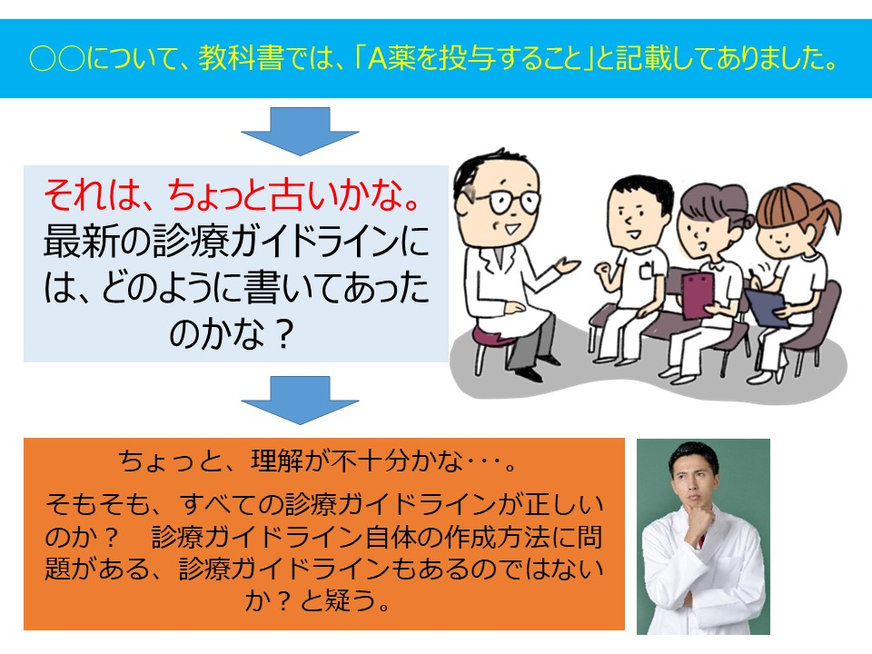
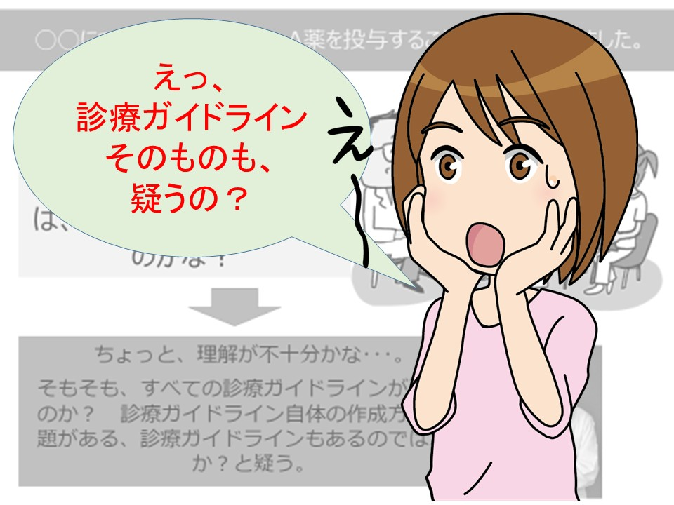
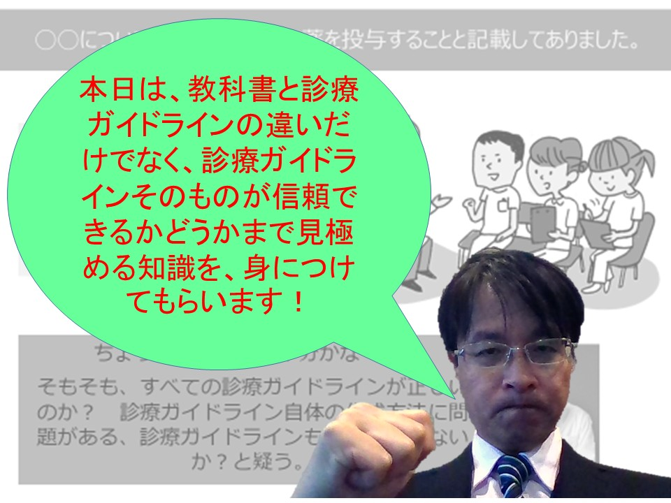
「教科書にある」「有名な先生が言った」「ガイドラインに載っている」で止まる。
どのSRに基づくか、エビデンスの確実性はどう評価されたか、推奨に変換した理由は何かまで確認する。
このページでは、まず「信頼できる医学情報とは何か」を押さえます。そのうえで、EBM、システマティックレビュー、診療ガイドラインがどの順番でつながるのかを、最初に学ぶ内容としてひとつずつ確認していきます。
1. 医学情報の信頼性 — あなたはどちらを信頼する？
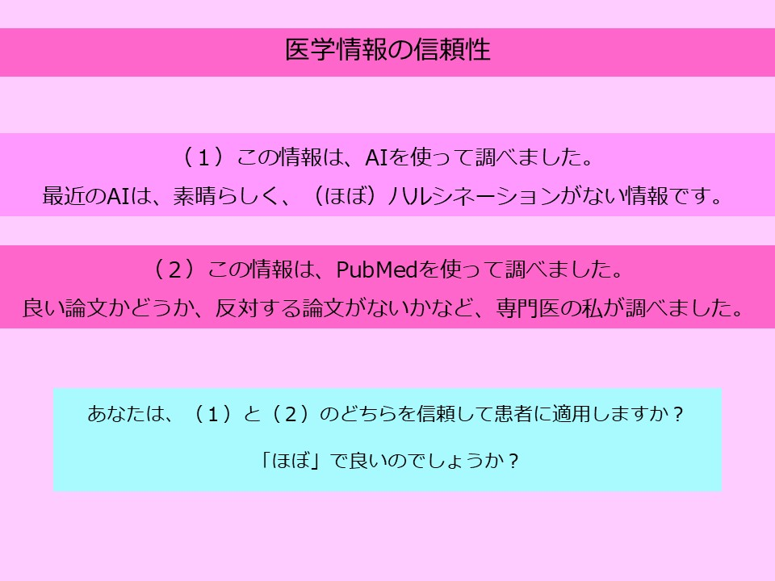
このスライドの本当の問いは「AIが悪い、PubMedが良い」という単純な話ではありません。患者に適用する医療情報では、その情報がどの研究から来て、反対の結果は確認され、どの程度信頼でき、目の前の患者に当てはまるかまで説明できる必要があります。
AIは要約や言い換えには非常に有用です。しかし「ほぼハルシネーションがない」では、臨床判断の最後の根拠としては足りません。専門医がPubMedで調べた情報の方が信頼されるのは、専門医だからではなく、検索した場所、採用した研究、除外した研究、反対する論文の有無を追跡できるからです。つまり、信頼性とは「誰が言ったか」ではなく、判断の道筋をたどれることです。
この時点で持っておきたい読み方
- 「新しい情報か」だけでなく、偏っていない探し方かを見る。
- 「効果があるか」だけでなく、その効果をどれくらい信じてよいかを見る。
- 「使えそうか」だけでなく、標準治療と比べてどうか、害はどうか、患者に合うかを見る。
ここから先は、その道筋を読むための基本語である EBM、システマティックレビュー（SR）、診療ガイドライン（CPG）を、スライドの順番に沿って確認します。
2. 「知っている」「使っている」ではダメな理由
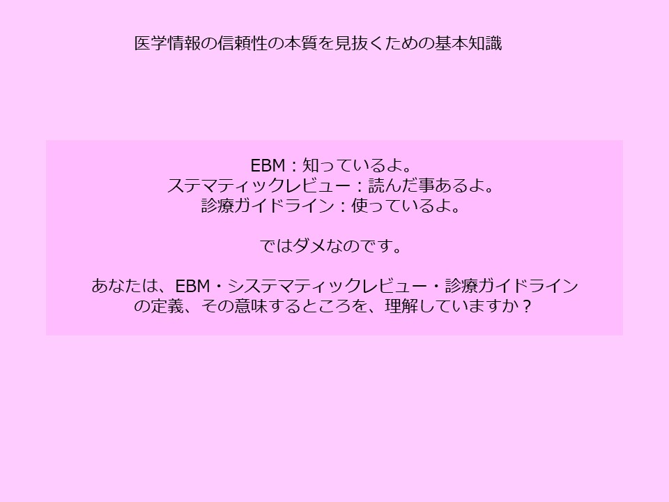
- 「EBM？ 知っているよ」 → それは5つのステップですよね。それでは3原則は？
- 「システマティックレビュー？ 読んだことあるよ」 → SRには、エビデンスの確実性が必須なのを知っていますか？
- 「診療ガイドライン？ 使っているよ」 → 信頼がない診療ガイドラインがあることを知っていますか？
EBM、SR、CPGは別々の暗記用語ではありません。臨床疑問を立て、研究を集め、結果を吟味し、エビデンスの確実性を評価し、患者に使える推奨へ変換するための一連の流れです。この流れが見えていないと、論文名やガイドライン名を知っていても、実際には「どこまで信頼してよいか」が判断できません。
3. EBMの定義 — Sackett 1996
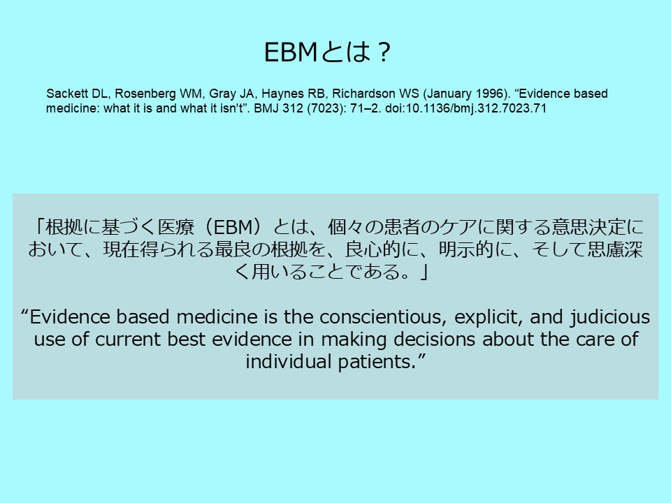
「根拠に基づく医療（EBM）とは、個々の患者のケアに関する意思決定において、現在得られる最良の根拠を、良心的に・明示的に・思慮深く用いることである。」
ここで大切なのは、EBMは「論文に書いてある通りにすること」ではない、という点です。現在得られる最良の根拠を使いますが、それを良心的に、明示的に、思慮深く用いる必要があります。
「良心的」とは、都合の良い研究だけを拾わないことです。「明示的」とは、なぜその情報を採用したのかを他者に説明できることです。「思慮深く」とは、研究結果をそのまま機械的に当てはめず、患者の病状、価値観、害、負担、標準治療との関係まで考えることです。
4. EBMの5ステップ（Evidence cycle: 5つのA）
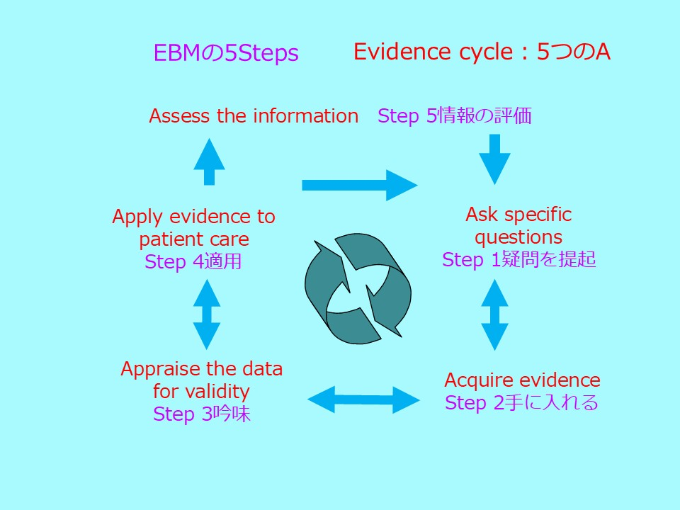
5ステップは、EBMを実際の診療で回すための作業手順です。まず「この患者で、どの介入を、何と比べ、どのアウトカムで判断するか」という疑問を立てます。次に、SRや診療ガイドラインなどのエビデンスを探します。そして、その研究が信頼できるかを吟味し、患者に適用し、最後に自分の判断を振り返ります。
ただし、5ステップは「作業の順番」であって、EBMの本質そのものではありません。どの情報を最良の根拠とみなすか、効果推定値をどれくらい信じるか、エビデンスだけで決めてよいのか。この3点を理解していないと、5ステップをなぞっても信頼できる判断にはなりません。
5. ⭐ EBMの3つの基本原則（意外に知られていない）
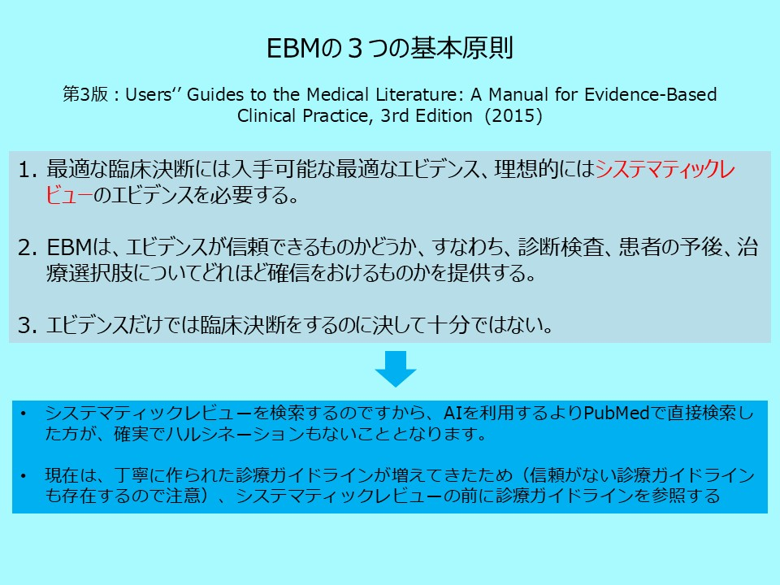
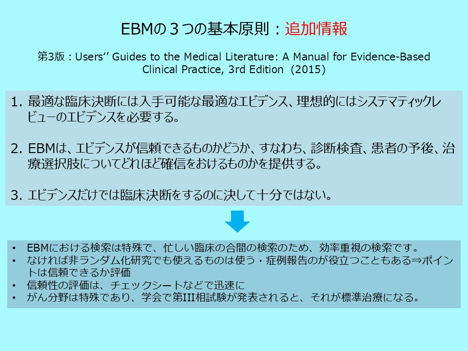
🎓 この原則から導かれる、実践上の重要ポイント
- 最適なエビデンスは、単独の有名論文ではなく、理想的には丁寧に作られたSRから得る。
- 信頼できるかは、結果の大きさだけでなく、研究の限界、ばらつき、対象のずれ、症例数、出版バイアスで判断する。
- エビデンスだけでは不十分で、患者の価値観、害、負担、費用、標準治療との位置づけを合わせて考える。
- 実務では、信頼できるCPGがあれば先に確認し、なければSRをPubMedで探す。AIは補助として使えるが、最終判断は検索と吟味で確認する。
EBMの5つのステップは有名ですが、最も重要な3原則は知られておりません。この3原則が、EBMから、現在のAI時代における診療ガイドラインまでをつなげる道しるべです。
スライド⑥の補足は、日常診療での検索の考え方です。忙しい臨床では、すべての一次研究を一から読むことは現実的ではありません。だからこそ、信頼できるCPGやSRから入り、必要に応じて元論文へ戻ります。
ここで特に注意したいのが、標準治療が作られる速度は分野によって違うという点です。がん領域では、第III相試験の多くが製薬会社主導で行われ、その結果にいわゆる「有意差」があり、どこかの国で承認されると、比較的早く新しい標準治療として扱われることがあります。一方、慢性疾患の領域では、第III相試験のあとにさらに大規模な臨床試験や長期追跡が行われ、害の情報もそろってから標準治療として広く認知されることが少なくありません。
したがって、がん領域のように第III相試験の結果が標準治療を変えることがある分野でも、「有意差がある」「承認された」だけで判断を終えてはいけません。比較対照が現在の標準治療だったのか、患者層が自分の患者に合うのか、効果の大きさは臨床的に意味があるのか、害やQOL低下はどれくらいかを確認してから、患者に適用できるかを考えます。
6. 診療ガイドライン（CPG）の世界的定義
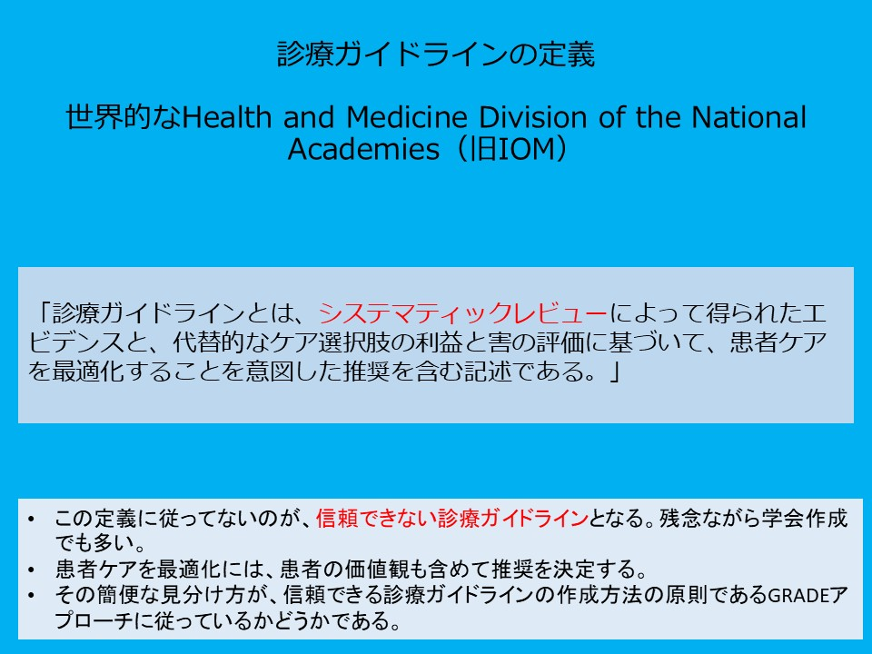
「診療ガイドラインとは、システマティックレビューによって得られたエビデンスと、代替的なケア選択肢の利益と害の評価に基づいて、患者ケアを最適化することを意図した推奨を含む記述である。」
この定義には、信頼できるCPGの条件がそのまま入っています。第1に、推奨の土台はシステマティックレビューでなければなりません。第2に、治療選択肢の利益と害を比べていなければなりません。第3に、その結果を患者ケアのための推奨として表現していなければなりません。
つまりCPGは、専門家の意見集でも、論文紹介集でもありません。標準治療を確認したり、新しい治療が標準治療を置き換えるかを考えたりするとき、読者は「この推奨は、どのSRに基づき、利益と害をどう比べ、どの程度の確実性で作られたのか」を追う必要があります。この3要素のいずれかが欠落している文書は、世界標準の意味では信頼できる診療ガイドラインとは言えません。
7. システマティックレビュー（SR）の定義
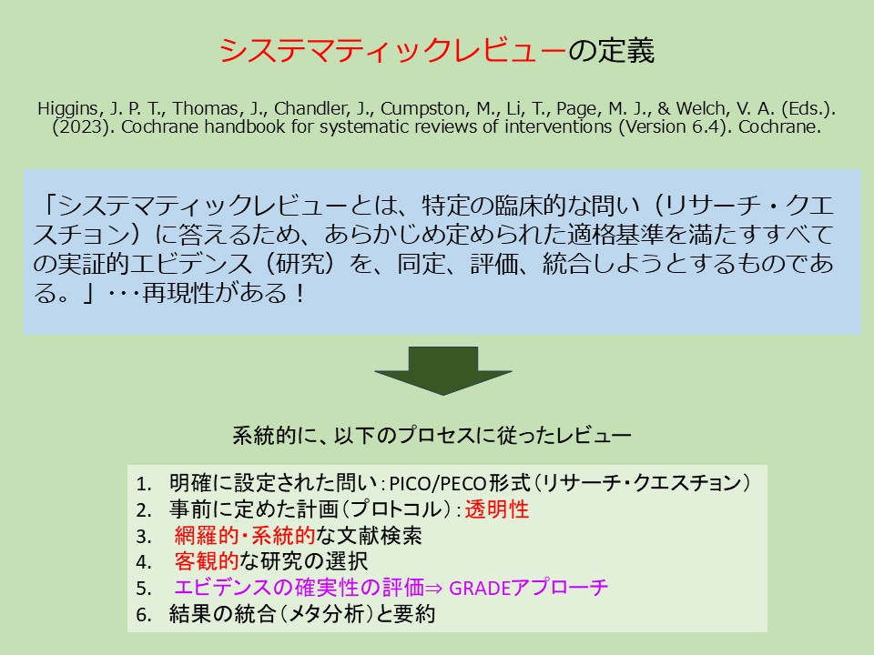
「システマティックレビューとは、特定の臨床的な問い（リサーチ・クエスチョン）に答えるため、あらかじめ定められた適格基準を満たすすべての実証的エビデンス（研究）を、同定・評価・統合しようとするものである。」…再現性がある！
SRは「詳しい総説」ではありません。最初に問いを決め、どの研究を入れるかを事前に決め、系統的に検索し、研究を選び、バイアスや不確実性を評価し、必要に応じてメタ分析で統合するレビューです。ポイントは、別の人が同じ方法をたどれば、概ね同じ研究集合に到達できるという再現性です。
SRが従うべき6ステップ
- 明確に設定された問い：PICO/PECO形式
- 事前に定めた計画（プロトコル）：透明性
- 網羅的・系統的な文献検索
- 客観的な研究の選択
- エビデンスの確実性の評価 ⇒ GRADEアプローチ
- 結果の統合（メタ分析）と要約
この6番目まで来て、ようやく「結果をどう読むか」に入ります。SRの結論を見るときは、効果推定値だけではなく、5番目のエビデンスの確実性が評価されているかを必ず確認します。
8. ⭐⭐ エビデンスの確実性とは — 同じ"1.62"でも確実性は違う
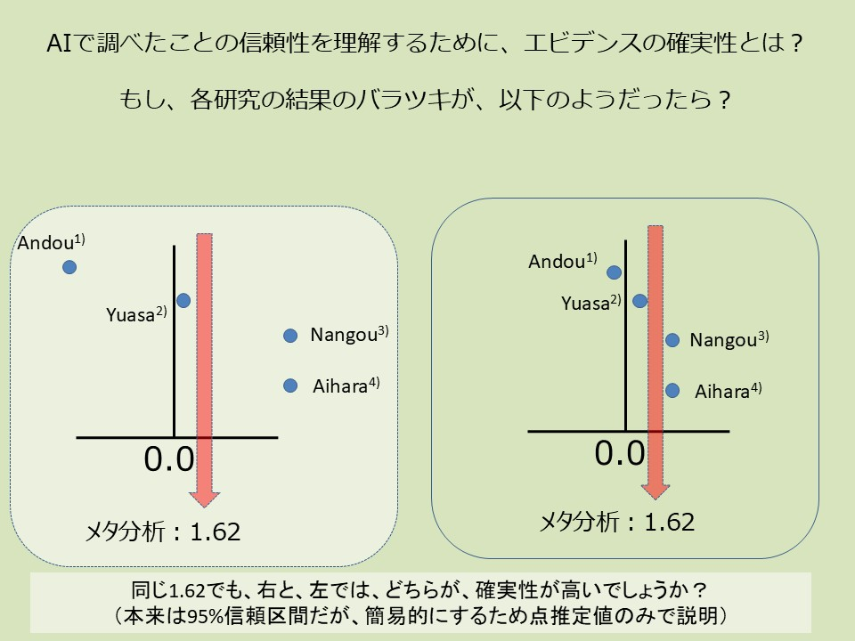
それでは、エビデンスの確実性が必要な例を説明しましょう。
左右の図は、いずれも4つの研究を統合したメタ分析の結果 1.62 を示しています。数字だけ見れば同じ結果です。しかし、左では研究ごとの結果が大きく散らばり、右では研究結果がかなり近い位置に集まっています。
4つの研究結果が大きく分散 → メタ分析の 1.62 は偶然の産物かもしれない → 確実性 低
4つの研究結果がほぼ一致 → メタ分析の 1.62 は本当に 1.62 に近い → 確実性 高
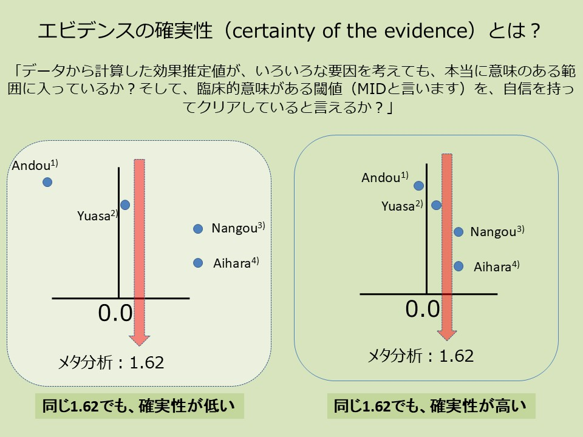
ここで初めて、「効果がありそう」という言い方から一歩進みます。エビデンスの確実性とは、点推定値がきれいに見えるかではなく、真の効果が、患者にとって意味のある判断を変える範囲にあると、どれくらい自信を持てるかです。効果推定値が同じでも、研究の質、結果のばらつき、患者層、症例数が違えば、臨床での信頼度は変わります。
9. エビデンスの確実性を下げる5要因（GRADEアプローチ）
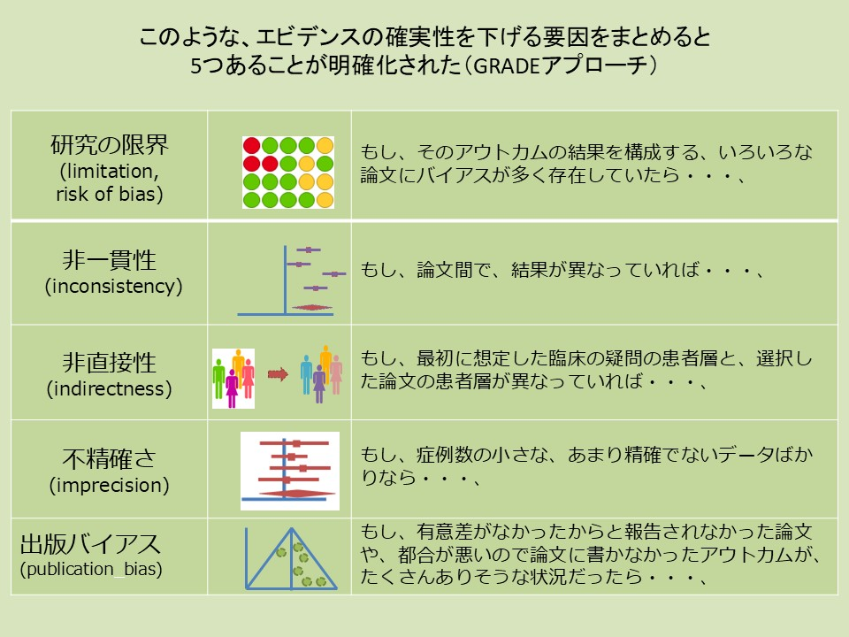
先ほどの、論文間の結果がばらついているなどの、エビデンスの確実性を下げる要因を5つにまとめたものが、グレードダウンの5要因です。これは、Guyatt先生らがEBMの教育の中で培ったエッセンスでもあります。それでは、それを学んでみましょう。
スライド⑪の5要因は、効果推定値を疑うためのチェックポイントです。研究にバイアスが多い、研究間で結果が食い違う、対象患者や比較対照が自分の疑問とずれている、症例数が少なく信頼区間が広い、都合の悪い研究が出版されていない可能性がある。このどれかが大きければ、メタ分析の結果が出ていても確実性は下がります。
そのアウトカムの結果を構成する論文にバイアスが多く存在していたら…
論文間で結果が異なっていれば…
最初に想定した臨床の疑問の患者層と、選択した論文の患者層が異なっていれば…
症例数の小さな、あまり精確でないデータばかりなら…
有意差がなかったからと報告されなかった論文が、たくさんありそうな状況だったら…
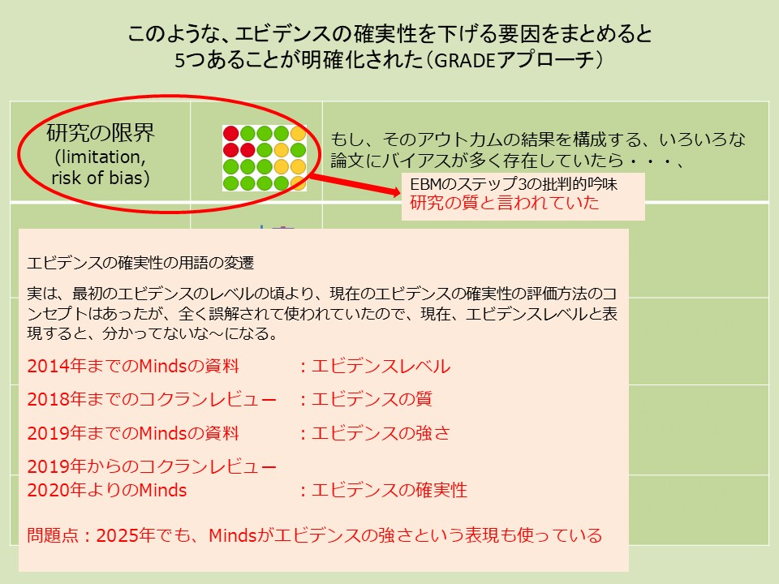
10. ⭐⭐⭐ 最重要：SRの質と、エビデンスの確実性は別物
従来のSRは「系統的・網羅的に検索して研究をまとめる」ことと「メタ分析で統合する」ことが中心でした。しかし最新のSRでは、それだけでは足りません。そこに必ずエビデンスの確実性の評価が加わります。メタ分析ができない定性的SRでも、確実性の評価は必要です。
ここで混同しやすいのが、SRそのものの質と、SRの中に含まれる効果推定値の確実性です。丁寧に作られたSRでも、含まれている研究が小さく、結果がばらばらで、患者層がずれていれば、エビデンスの確実性は低くなります。逆に、雑に作られたSRは、その時点で結果を臨床判断に使うべきではありません。
11. 診療ガイドラインの解説文 — 批判的吟味の実例
問題：SR1はRCT1・RCT2を含んでいるはず。なのに並列で並べるのは重複カウント。どのRCTが含まれているか不明、SRの質・エビデンスの確実性も不明。
問題：各SRで使われているRCTが異なるのか同一なのか、SRが丁寧に作られているのか、メタ分析結果のエビデンスの確実性も何も分からない。
このスライドは、よくある「怪しい診療ガイドライン」の例です。論文名やSR名がたくさん並んでいると、いかにも根拠が多いように見えます。しかし、同じRCTをSRと個別論文で二重に数えていたり、SRごとに含まれるRCTが違うのに説明がなかったりすると、読者は効果推定値も確実性も判断できません。
良い解説文は、少なくとも次のことが追える形で書かれています。どのSRを主な根拠にしたのか。SRに含まれる研究は何か。比較対照はプラセボなのか、無治療なのか、既存の標準治療なのか。SRは丁寧に作られているのか。効果推定値のエビデンスの確実性は高いのか低いのか。そして、その確実性で、なぜその推奨の強さになったのか。
このようなつながりが見えない解説文は、CPG としての信頼性を大きく損ないます。本サイトの Ch16（信頼できる CPG の6つの質問）・Ch18（AMSTAR 2）で、こうした CPG・SR を系統的に判定する方法を学びます。
13. 🆕 EBMは、GRADEに発展しました（理由は、Guyatt先生講演（EBMからGRADEへ）を参照）
Guyatt先生の講演で強調されるように、EBMは「臨床家が全員、原著論文を一から批判的吟味する」方向には進みませんでした。現実には、臨床家は信頼できるSR・CPGを使います。その代わり、読み手には「そのSR/CPGが何を根拠に、どれくらい確信して、どの強さで勧めているか」を読む力が必要です。GRADEはそのためにEBMから発展した道具です。
EBMの5ステップとGRADEは、同じ作業を見ています
EBMの古典的な5ステップは、患者から疑問を作り、証拠を探し、批判的に吟味し、患者に適用し、結果を振り返るという流れです。GRADEは、この流れをSR・診療ガイドラインの世界で、より透明に、より再現可能にしたものです。言い換えると、EBMは「臨床医一人がベッドサイドで行う考え方」、GRADEは「SRチームやガイドラインパネルが同じ考え方を表にして見えるようにする方法」です。
Core GRADEの全体像で見ると、前半はPICOを定め、患者に重要なアウトカムを選び、研究を統合し、アウトカムごとの確実性を評価する作業です。後半は、その確実性を、利益と害のバランス、患者の価値観、負担や資源、実行可能性などと合わせて、推奨へ進める作業です。これはEBMの5ステップを、SRとCPGの読み取り画面に置き換えたものと考えると理解しやすくなります。
疑問を作る
証拠を探す
吟味する
患者に適用する
振り返る
読み手に必要なのは、ガイドライン作成者の細かな計算を全部再現することではありません。むしろ、EBMの5ステップを頭に置きながら、「この推奨はPICOが自分の患者と合うか」「SRは証拠を十分に集めたか」「確実性はなぜ高い／低いのか」「EtDで患者の価値観や害がどう扱われたか」「新しい証拠で変わりうるか」を順に確認することです。この読み方を身につけると、SoF表やEtD表は作成者向けの難しい表ではなく、臨床判断の地図として読めるようになります。

EBMとして、初心者が論文を読むときの5つのポイント
Guyatt先生の講演の通り、日常診療で全ての原著論文を一から批判的吟味するのは現実的ではありません。それでも、SRやCPGの根拠になっている重要論文を読む場面はあります。そのとき初心者が最初に見るべきなのは、著者の結論ではなく、臨床疑問・方法・結果・限界・自分の患者への適用です。

初心者はここから読む
- PICO：対象患者、介入、比較、アウトカムが、自分の疑問と合っているか。
- 方法：RCTか観察研究か、追跡期間は十分か、アウトカムは患者に重要か。
- 結果：相対効果だけでなく絶対効果と信頼区間を見る。点推定値だけで判断しない。
- 限界：バイアスリスク、脱落、盲検化、選択的報告、資金提供などで結果がゆがみそうか。
- 適用：自分の患者の背景リスク、価値観、併存疾患、医療環境で同じ判断になるか。
💡 初学者はここだけ押さえる
- GRADEは「作る人の作業表」ではなく、読み手にとっては信頼できる医療情報の読み取り表です。
- まずSoF表で「効果の大きさ」と「確実性」を読む。次に推奨文で「強い」か「条件付き」かを読む。
- 難しい用語が出ても、最終的には「この患者に使えるか」「利益は害を上回るか」「患者がどう感じるか」に戻ればよい。
- 細かな方法論に深入りする前に、CPG本文がその判断理由を読者に説明しているかを確認する。
14. 🆕 確実性評価の「ターゲット」選択 — Null vs MID
初学者はまず、信頼区間を「判断が変わる線」と一緒に読みます。統計学では Null（効果なしの線）をよく見ますが、臨床ではそれだけでは足りません。患者にとって重要な差、つまり MID を超えるかどうかも大事です。CPGを読むときは、著者がどちらの線を基準に「確実」と言っているのかを探します。
この閾値を考える考え方は、有意差至上主義を脱却するために必要な考えであり、ここで理解できなくても、順番に理解するようにしていきましょう。

読むときに見る2本の線 — Null と MID
信頼区間がこの線をまたぐと、「利益か害か、あるいは効果なしなのか」がまだ不確かです。
統計的には効果があっても、この線を超えなければ診療を変えるほどではないことがあります。
SR・CPGを読むときの4ステップ
- アウトカムを確認する — 死亡、入院、症状改善、副作用など、患者にとって重要なものか。
- 効果の大きさを見る — 相対効果だけでなく、絶対効果も見る。
- 信頼区間を見る — Null や MID をまたいでいないか確認する。
- 推奨文に戻る — その不確実性を踏まえて、強い推奨なのか条件付き推奨なのかを読む。
💡 初学者が間違えやすい点
- 「有意差あり」だけで臨床的に重要と判断しない。
- 「確実性が中」と書かれていても、何を中程度に確信しているのかを読む。
- 信頼区間が広いときは、点推定値よりも「どこまで悪い可能性・小さい可能性があるか」を見る。
- CPGがMIDや重要な閾値を示していない場合は、推奨の根拠を慎重に読む。
15. 🆕 有意差があっても、少数症例で大きな効果は要注意です
大事なのは、SRやCPGが「症例数・イベント数が少ないこと」を不精確性として扱っているかを読むことです。特に、早期の小規模研究、希少イベント、イベント数が少ないアウトカム、単施設研究に近いエビデンスでは、効果が大きく見えても過信しません。
臨床医の読み方
16. 🆕 「Risk of Bias」は「Bias」ではない — 教育的ゲシュタルトの原則
読み手にとって重要なのは、「研究に弱点がある」と「結果が実際にゆがんでいる」を区別することです。SRやCPGでRisk of Biasが問題と書かれていたら、単にチェックリストの×を数えるのではなく、その弱点がこのアウトカム、この効果推定に本当に影響しそうかを読みます。
臨床医が読むときの具体例
読み手の2段階チェック
例：盲検化なし、脱落が多い、割付隠蔽が不明、選択的報告など
アウトカムの客観性、脱落の偏り、低RoB研究だけの結果を確認
SR・メタ分析で見る場所
💡 教育的ゲシュタルトを読み手向けに言うと
- チェックリストの点数だけで判断しない。
- 「この弱点は、このアウトカムの結果をどちら向きに、どれくらいゆがめそうか」と考える。
- GRADE評価が機械的に見える場合は、本文や補足資料で臨床的な説明があるか確認する。
- 説明が乏しいまま「確実性：高」とされている場合は、読み手として慎重に扱う。
17. 🆕 グループ間の違いについて、2つの場合があることを理解する
読み手が混同しやすい2つの概念
例：同じRR=0.5でも、入院リスクが20%の患者では10%減りますが、入院リスクが2%の患者では1%しか減りません。
臨床では非常によく起きます。年齢、重症度、併存疾患、免疫状態などは、絶対効果の大きさに直結します。
例：ある薬が若年者ではRR=0.5、高齢者ではRR=0.9になる、というような状況。
こちらは簡単には信じません。事前に計画され、方向も予測され、生物学的・臨床的に納得できる説明が必要です。
SR・CPGを読むときのチェック
18. 🆕 エビデンスから推奨へ — 4つの推奨タイプと「強さ」の決定

この図を診療で使う
- 強い推奨は「ほとんどの患者が同じ選択をする」と読めるかを確認する。
- 条件付き推奨は「患者によって選択が変わる」と理解し、価値観を聞く。
- 推奨の強さが納得できないときは、EtDで利益・害・確実性・価値観の説明に戻る。
推奨文で見る2×2グリッド
12. まとめ — 信頼できる医療情報を見極める目を養うために
🎯 患者にとって望ましい情報を考えると…
- 最新の情報が欲しい
- 偏ってない情報が欲しい
- 信頼性が高い情報が欲しい
- 研究段階でなく、標準治療との関係まで分かる情報が欲しい
→ 信頼できる診療ガイドライン、なければ、自分で信頼できる情報を探す
信頼できる情報を探すために：
- 患者も AI で調べる時代で、同じレベルではプロではない
- ハルシネーションは「ゼロ」でなければならない
- 標準治療と比べた利益・害、エビデンスの確実性を自分で読めなければならない（AI だけでは不十分）
- もっとも、AI は有用であり、利用すべきである
- 医学以外の分野では、AI、特に Deep Research が有用
本サイトの Ch1〜Ch25 は、このための最短ルートです。
JAMA Users' Guides to the Medical Literature（第3版）第22章の枠組みを、独立の解説として整理しました。内容は本サイトの各章と一部重複しますが、「SR／MAというプロセスが、私たちが結論を信じてよい水準で実施されたか」をJAMA流の質問として読み直す章です。本編の各章（Ch1, Ch8〜12, Ch18, Ch19）と補完的に読むと理解が深まります。
心臓手術以外の大手術を控えた高リスク患者について、周術期のβ遮断薬perioperative β-blockerを投与すべきか迷っています。過去のガイドラインは「投与を推奨」としていた時期がありましたが、大規模RCT（POISE）以降、推奨は揺れ動いてきました。最新のSR／MAを探し、本当に信じてよいのか自分で判断したい — これが出発点です。
1. なぜ SR／MA を探すのか — ナラティブレビューとの違い
臨床上の疑問に答えるには、1本のRCTだけでなく、関連するすべての研究を系統的・再現可能な手順で集めて統合する必要があります。JAMA UG は SR と従来の「総説（ナラティブレビュー）」の違いを次のように整理しています。
用語整理
- システマティックレビュー SR：焦点を絞った臨床疑問を、再現可能な方法で統合する研究のタイプ。
- メタアナリシス MA：SR のなかで、個別研究の結果を統計的に統合して単一の推定値（point estimate）と信頼区間（CI）を算出する工程。統計的統合を行わない SR も正当（統合不可能な場合、ナラティブ統合に留める）。
2. SR／MA の標準プロセス — 9 ステップの俯瞰
JAMA UG が示す標準的な実施プロセスは以下の流れです。読者としては、論文本文および PRISMA 図でこの流れが追えるかを確認します。
- 疑問を定式化する（PICO／PECO）患者・介入・対照・アウトカムを明示的に定義
- 適格基準を決める研究デザイン・対象集団・介入の範囲・アウトカム
- 異質性を説明する事前仮説サブグループ解析の方向性を事前に明文化
- 系統的な文献検索MEDLINE / EMBASE / Cochrane Central を最低限カバーし、検索語・期間・言語制限を明記
- タイトル・抄録・全文のスクリーニング独立した 2 名以上で行い、κ統計量で一致度を評価
- バイアスのリスク評価とデータ抽出これも独立した 2 名以上で実施
- 効果推定値の統合（MA を行う場合）固定効果／変量効果モデルを適切に選択
- 異質性の評価I²・Q 検定・事前仮説に基づくサブグループ解析
- 確実性（エビデンスの質）の評価と報告GRADE による格付けと Summary of Findings の提示
3. SR／MA の信頼性を見抜く 8 つの質問
JAMA UG は、臨床家が SR／MA を批判的に読むためのチェックリストとして、次の質問を提示します。本書では各質問の要点を解説付きで示します。
- 臨床的に意味のある疑問が明確に設定されているかP・I・C・O が絞られていて、臨床現場で遭遇する問いと一致するか
- 検索は徹底かつ系統的か複数データベース（MEDLINE / EMBASE / Cochrane Central）に加え、未公表データ・試験登録・引用追跡・専門家照会まで確認したか
- 研究の選択と評価は再現可能か独立した 2 名によるスクリーニング、κ統計量による一致度の報告
- 1 次研究のバイアスリスクが適切に評価されたかランダム化・隠蔽化・盲検化・追跡・ITT などの主要ドメインを、個別研究ごとに判定しているか
- 研究間の結果のばらつき（異質性）の理由が探られているかI²・視覚的評価・事前仮説に基づくサブグループ解析／メタ回帰
- 効果推定値の確実性（エビデンスの質）が等級付けされているかGRADE に沿った評価が提示され、アウトカムごとに理由が明記されているか
- 報告バイアスが検討されているかファンネルプロット、trim-and-fill、未公表研究の統合など
- 自分の患者に適用できる結果が提示されているかベースラインリスク別の絶対効果、NNT、重要なサブグループでの効果
4. 各質問の要点 — 読むときの着眼点
Q1 — 疑問は明確か（PICO の定式化）
レビューの冒頭で、対象患者の範囲（年齢・病期・重症度・併存症）、比較される介入、対照、臨床的に重要なアウトカムが具体的に列挙されていることを確認します。
⚠️ 注意：「良いSRほど焦点は絞られ、適格基準は厳格」だが、その反面 一般化可能性は狭くなる というトレードオフがあります。あなたの目の前の患者がその範囲に入るかを必ず照合します。
Q2 — 検索は徹底的か
単一データベースだけの検索は不十分。最低 3 つの国際データベース（MEDLINE / EMBASE / Cochrane Central）に加え、以下をチェック：
- 学会抄録・会議録
- 試験登録（ClinicalTrials.gov, WHO ICTRP）
- 引用追跡（参考文献リストのチェック）
- 専門家への照会・灰色文献
- FDA／EMA の申請資料（薬剤の場合）
FDA 資料と公表論文を比べると、未公表試験や結果の歪んだ報告が見つかる例があります（報告バイアス／選択的アウトカム報告）。
Q3 — 選択と評価は再現可能か（κ統計量）
スクリーニングとバイアスリスク評価は、独立した 2 名以上で行う必要があります。食い違いが出るのは当たり前で、それをどう解決したか（3 人目の裁定、議論）まで報告されるのが望ましい形です。
一致度はκ統計量kappaで定量化され、0.6 以上（実質的一致）が目安。κの報告がない SR は、選択バイアスの懸念が残ります。
Q4 — 1次研究のバイアスリスク評価
RCT では以下のドメインを個別研究ごとに判定：
- ランダム化の方法（配列生成）
- 割り付けの隠蔽化（concealment）
- 盲検化（患者・医療者・評価者・解析者）
- 脱落／追跡不能の影響
- ITT 原則の適用
- 早期中止（stopped early for benefit）
⚠️ 客観的アウトカム（死亡）では盲検化の影響は小さいが、主観的アウトカム（疼痛・QOL）では盲検化の破綻がバイアスを大きく増やすため、アウトカムごとに影響を考えます。
詳細は Ch8 Risk of Bias を参照。
Q5 — 異質性の理由は探られているか
統合する前に、個別研究の結果が互いに近いか（一貫しているか）を必ず確認します。評価方法は：
- 視覚的評価：フォレストプロット上の点推定値のばらつきと CI の重なり
- Q 検定（yes／no 式の帰無仮説検定）
- I²統計量：ばらつきのうち研究間差が占める割合を % で示す（0–100%）
ばらつきが大きい場合は、事前に計画されたサブグループ解析／メタ回帰でその源を説明すべきです（患者特性・介入量・追跡期間・研究の質など）。事後的に無理やり説明するのは「仮説を生み出す」程度の信頼性しかありません。
詳細は Ch9 不一致性 を参照。
Q6 — エビデンスの確実性（質）の等級付け
JAMA UG の標準は GRADE。RCT は「高」、観察研究は「低」を出発点とし、以下の要因で上下します：
バイアスのリスク／非一貫性（inconsistency）／非直接性（indirectness）／不精確性（imprecision）／出版バイアス
大きな効果量／用量反応性／交絡要因が効果を減弱させる方向に働く
結果は 高・中・低・非常に低 の 4 段階で示されます（Ch3）。
Q7 — 報告バイアスは検討されているか
JAMA UG は報告バイアスへの対処として 4 つの手法を挙げます：
- 小規模研究と大規模研究で結果が異なるかを比べる
- ファンネルプロットの視覚的検討（対称性）
- 点推定値のばらつきの非対称性を定式化した統計検定（Egger など）
- 統計的有意差の欠落した研究の過多を検出する方法
⚠️ いずれの手法も完璧ではなく、研究数が少ない SR では検出力が低いことに注意。最善の対処は「最初からすべての研究が登録・報告される仕組み」を社会として作ることです。
Q8 — 自分の患者に適用できる結果か
レビューが「相対リスク（RR）」だけを示しているなら半分の仕事です。臨床家には絶対効果が要ります。ベースラインリスク別に絶対リスク差・NNT を提示してこそ、目の前の患者に使える情報です。
例：相対リスク 25% 減 (RR 0.75) は
- 高リスク患者（年間イベント率 8%）→ 絶対差 2%／NNT = 50
- 低リスク患者（年間イベント率 0.5%）→ 絶対差 0.125%／NNT = 800
同じ RR でも臨床的意味は全く違う。この視点は Ch6 相対 vs 絶対 と Ch19 患者への適用 が詳しい。
5. フォレストプロットの読み方 — 模式図
JAMA UG は SR／MA のフォレストプロットを「結果を要約する言語」と位置づけます。次のような読み方をします。
- 四角の大きさ = 研究の重み（精度 = サンプルサイズと情報量）
- 横線 = 95% 信頼区間（CI）
- ダイヤモンド = 統合推定値と CI
- 縦線（無効線 RR = 1 または RD = 0）を CI がまたぐと「統計的有意差なし」
- 結果のばらつきを目で見て、どれくらい似ているかを第一印象で判断するのが異質性評価の出発点
β遮断薬のSR を読んで、上記 8 項目に照合します。
Q1–Q3：検索範囲・独立レビューが明記されていれば合格。
Q4：POISE 試験のような大規模・低バイアス試験が含まれているか。少数の古い試験のみなら信頼度は低い。
Q5：心血管アウトカム（ベネフィット）と脳卒中・死亡（ハーム）の両方でサブグループ解析がされているか。
Q6：GRADE による確実性が、主要アウトカムごとに示されているか。
Q8：あなたの目の前の患者のベースラインリスクに当てはめた NNT／NNH が提示されているか。
この 8 項目をクリアして初めて、「SR／MAの結果を信じてよい」水準に達します。信じられる SR が得られたら、結果の大きさ・精度・患者への適用可能性は Ch6（JAMA UG Ch23統合） で評価します。
直接比較する RCT がない選択肢のあいだで優劣を知りたいとき、ネットワークメタアナリシスNMA / network meta-analysisが使えます。JAMA UG 第24章は、NMA の仕組みと、読者が信頼性を判定するためのチェックポイントを示します。
45 歳女性、片頭痛。これまで市販鎮痛薬では効かず、トリプタン系薬剤のなかでどれが最も効果的かを比較したい。しかし、多くのトリプタンはプラセボ対照の RCT はあるが、薬剤どうしの直接比較 RCT は限定的。NMA で横断的に比較したい。
1. NMA は何が違うか — 従来 MA との対比
「介入 A vs プラセボ」「介入 B vs プラセボ」を別々に統合。A と B を直接比べる RCT がなければ比較できない。
プラセボを共通の比較対象として、A vs プラセボとB vs プラセボの情報を用いて A vs B の間接比較を計算。直接比較があればそれと統合して総合推定値を作る。
2. ネットワークの形 — 典型パターン
JAMA UG は NMA で扱う典型的なネットワーク形状を 4 つのパターンで整理しています。
閉ループ（B）や完全連結（D）のネットワークは、直接比較 vs 間接比較の一貫性をチェックできる点で信頼性が高くなります。
3. NMA の信頼性を判定する — ユーザーズガイド
- 適格基準に明白で適切な臨床疑問が含まれているかPICO が一貫しており、ネットワーク全体の「被験者同士が交換可能」と言える範囲か
- 研究の選択と報告のバイアスリスクが低いか検索の徹底性、出版バイアス、選択的アウトカム報告
- 研究間の違い（異質性）への説明があるか患者集団・介入量・アウトカム測定法の違い
- 直接比較と間接比較の結果が一貫しているか（整合性coherence）閉ループでの一貫性検定、ノード分割（node-splitting）など
- 著者は対比較ごとに確実性を等級付けしているかGRADE は「A vs B」ごとに「高・中・低・非常に低」を付けるべき
- 結果は感度推定や潜在的バイアスに頑健か感度分析、バイアスリスクの低い試験のみでの再解析
- ランク付け（例：SUCRA）の限界が明示されているか「最も有効」の見かけのランクは信頼性が低いことが多い
- 患者にとって重要なアウトカム全てが検討されているか有効性だけでなく、有害事象・QOL も NMA に含まれているか
4. 整合性（coherence）— NMA 特有の概念
同じ比較（A vs B）について、直接比較（A 対 B の RCT）と間接比較（プラセボを経由した計算値）が得られる場合、両者が一致するかを必ず検討します。
- 研究に組み込まれた患者集団の違い（年齢・重症度・疾患の範囲）
- ベースラインリスク・以前の治療歴の違い
- 介入の用量・投与期間・併用療法の違い
- アウトカムの定義や測定時点の違い
- 研究の実施年代による通常診療の進化
5. ランク付けの落とし穴
NMA の結果として介入のランキング（1 位、2 位…）やSUCRA値が提示されることがあります。魅力的に見えますが、JAMA UG は深い落とし穴を指摘しています。
- データが少ない介入は偶然に上位に来ることがある
- 順位は「差が臨床的に意味がある」ことを保証しない
- 確実性の低いエビデンスに基づくランクは、新しい試験で順位が変わる可能性が高い
- 「最も有効」のランクだけを見て、対比較ごとの確実性を見ないのは誤り
6. NMA の結果の適用 — 4 つのチェック
- 患者重要アウトカム全てが検討されているか（有効性＋有害事象＋QOL）
- 考えうる治療選択肢が全て含まれているか（臨床現場で選びうるすべての介入）
- 想定されているサブグループ効果のうち、信用性の高いものがあるか
- 結果は感度推定や潜在的バイアスに頑健か（非一貫性の有無含む）
片頭痛に対するトリプタン NMA（たとえば Thorlund 2014）は、プラセボ対照・直接比較を含む多数の RCT を統合し、頭痛消失率・2 時間持続効果率・副作用を比較しています。
結果の読み取り：エレトリプタン 40 mg、スマトリプタン 100 mg、リザトリプタン 10 mg が頭痛消失率で上位にランクされますが、対比較ごとの確実性を見ると、上位 3 者間の差は小さく、確実性も「中」程度のことが多い。
臨床判断：ランキング 1 位に飛びつかず、利用可能性・副作用プロファイル・患者の既往歴（冠動脈疾患の有無など）・コスト・過去の反応を総合して選択する。